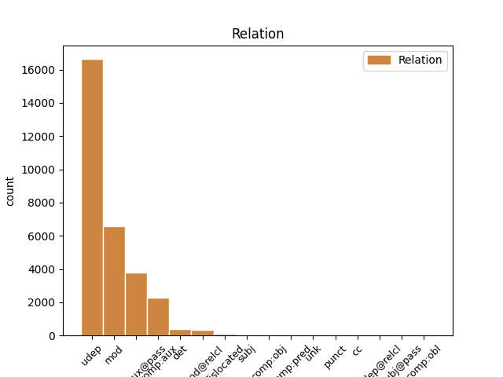
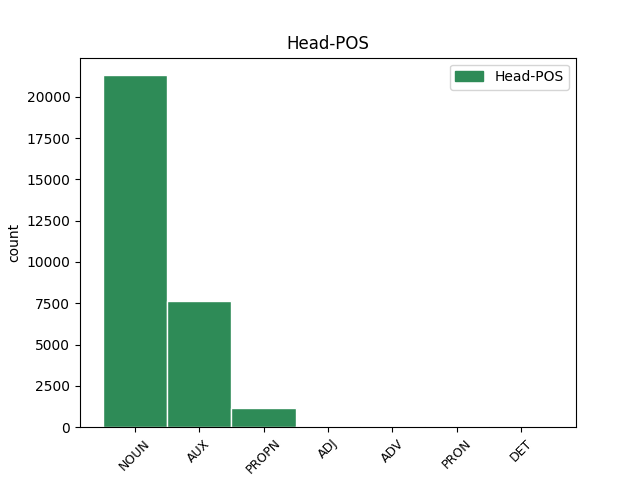
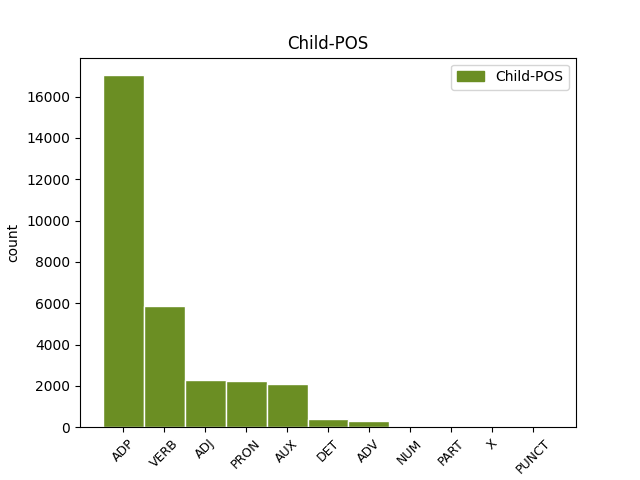

Distribution of features within this leaf



Agreement Rules sorted by frequency.
- When the dependent token is the underspecified dependency(udep) of the head token, and the head token is NOUN and the dependent token is ADP.
1 उन्होंने _ _ _ _ 0 _ _ _
2 यहां _ _ _ _ 0 _ _ _
3 वेटिकन _ _ _ _ 0 _ _ _
4 दूतावास _ _ _ _ 0 _ _ _
5 में _ _ _ _ 0 _ _ _
6 एक _ _ _ _ 0 _ _ _
7 शोक _ _ _ _ 0 _ _ _
8 पुस्तिका _ _ _ _ 0 _ _ _
9 पर _ _ _ _ 0 _ _ _
10 हस्ताक्षर _ _ _ _ 0 _ _ _
11 कर _ _ _ _ 0 _ _ _
12 पोप _ _ _ _ 0 _ _ _
13 जॉन _ _ _ _ 0 _ _ _
14 पॉल _ _ _ _ 0 _ _ _
15 द्वितीय _ _ _ _ 0 _ _ _
16 के का ADP PSP AdpType=Post|Case=Acc|Gender=Masc|Number=Sing 17 udep _ ChunkId=NP6|ChunkType=child|Translit=ke
17 निधन निधन NOUN NN Case=Acc|Gender=Masc|Number=Sing|Person=3 0 _ _ _
18 पर _ _ _ _ 0 _ _ _
19 गहरा _ _ _ _ 0 _ _ _
20 दुख _ _ _ _ 0 _ _ _
21 प्रकट _ _ _ _ 0 _ _ _
22 किया _ _ _ _ 0 _ _ _
23 । _ _ _ _ 0 _ _ _
1 उन्होंने _ _ _ _ 0 _ _ _
2 यह _ _ _ _ 0 _ _ _
3 भी _ _ _ _ 0 _ _ _
4 कहा _ _ _ _ 0 _ _ _
5 कि _ _ _ _ 0 _ _ _
6 अब _ _ _ _ 0 _ _ _
7 चीन _ _ _ _ 0 _ _ _
8 का _ _ _ _ 0 _ _ _
9 हृदय _ _ _ _ 0 _ _ _
10 परिवर्तन _ _ _ _ 0 _ _ _
11 होता हो VERB VM Aspect=Imp|Gender=Masc|Number=Sing|Person=3|VerbForm=Part|Voice=Act 13 comp:aux@pass _ ChunkId=VGF2|ChunkType=head|Stype=declarative|Tam=wA|Translit=hotā|Vib=ता_जा_रह+या_है
12 जा _ _ _ _ 0 _ _ _
13 रहा रह AUX VAUX Aspect=Perf|Gender=Masc|Number=Sing|VerbForm=Part 0 _ _ _
14 है _ _ _ _ 0 _ _ _
15 । _ _ _ _ 0 _ _ _
1 मैं _ _ _ _ 0 _ _ _
2 स्पष्ट _ _ _ _ 0 _ _ _
3 कर _ _ _ _ 0 _ _ _
4 देना _ _ _ _ 0 _ _ _
5 चाहता _ _ _ _ 0 _ _ _
6 हूं _ _ _ _ 0 _ _ _
7 कि _ _ _ _ 0 _ _ _
8 मेरा मैं PRON PRP Case=Acc,Gen|Gender=Masc|Number=Sing|Person=1|Poss=Yes|PronType=Prs 9 mod _ ChunkId=NP2|ChunkType=head|Tam=kA|Translit=merā|Vib=का
9 दृष्टिकोण दृष्टिकोण NOUN NN Case=Nom|Gender=Masc|Number=Sing|Person=3 0 _ _ _
10 अलगाववादी _ _ _ _ 0 _ _ _
11 नहीं _ _ _ _ 0 _ _ _
12 है _ _ _ _ 0 _ _ _
13 । _ _ _ _ 0 _ _ _
1 उन्होंने _ _ _ _ 0 _ _ _
2 यहां _ _ _ _ 0 _ _ _
3 वेटिकन _ _ _ _ 0 _ _ _
4 दूतावास _ _ _ _ 0 _ _ _
5 में _ _ _ _ 0 _ _ _
6 एक _ _ _ _ 0 _ _ _
7 शोक _ _ _ _ 0 _ _ _
8 पुस्तिका _ _ _ _ 0 _ _ _
9 पर _ _ _ _ 0 _ _ _
10 हस्ताक्षर _ _ _ _ 0 _ _ _
11 कर _ _ _ _ 0 _ _ _
12 पोप _ _ _ _ 0 _ _ _
13 जॉन _ _ _ _ 0 _ _ _
14 पॉल _ _ _ _ 0 _ _ _
15 द्वितीय _ _ _ _ 0 _ _ _
16 के _ _ _ _ 0 _ _ _
17 निधन _ _ _ _ 0 _ _ _
18 पर _ _ _ _ 0 _ _ _
19 गहरा गहरा ADJ JJ Case=Nom|Gender=Masc|Number=Sing 20 mod _ ChunkId=NP8|ChunkType=child|Translit=gaharā
20 दुख दुख NOUN NN Case=Nom|Gender=Masc|Number=Sing|Person=3 0 _ _ _
21 प्रकट _ _ _ _ 0 _ _ _
22 किया _ _ _ _ 0 _ _ _
23 । _ _ _ _ 0 _ _ _
1 पासवान _ _ _ _ 0 _ _ _
2 ने _ _ _ _ 0 _ _ _
3 बृहस्पतिवार _ _ _ _ 0 _ _ _
4 को _ _ _ _ 0 _ _ _
5 उनके _ _ _ _ 0 _ _ _
6 कमांडो _ _ _ _ 0 _ _ _
7 वापस _ _ _ _ 0 _ _ _
8 लेने _ _ _ _ 0 _ _ _
9 के _ _ _ _ 0 _ _ _
10 राज्य _ _ _ _ 0 _ _ _
11 प्रशासन _ _ _ _ 0 _ _ _
12 के _ _ _ _ 0 _ _ _
13 प्रस्ताव _ _ _ _ 0 _ _ _
14 पर _ _ _ _ 0 _ _ _
15 कड़ी _ _ _ _ 0 _ _ _
16 नाराजगी _ _ _ _ 0 _ _ _
17 जताई _ _ _ _ 0 _ _ _
18 थी _ _ _ _ 0 _ _ _
19 और _ _ _ _ 0 _ _ _
20 चुनावों _ _ _ _ 0 _ _ _
21 में _ _ _ _ 0 _ _ _
22 डीजीपी _ _ _ _ 0 _ _ _
23 की _ _ _ _ 0 _ _ _
24 भूमिका _ _ _ _ 0 _ _ _
25 संदिग्ध _ _ _ _ 0 _ _ _
26 होने _ _ _ _ 0 _ _ _
27 का _ _ _ _ 0 _ _ _
28 आरोप _ _ _ _ 0 _ _ _
29 लगाया लगा VERB VM Aspect=Perf|Gender=Masc|Number=Sing|VerbForm=Part|Voice=Act 30 comp:aux _ ChunkId=VGF2|ChunkType=head|Stype=declarative|Tam=yA|Translit=lagāyā|Vib=या_था
30 था था AUX VAUX Gender=Masc|Mood=Ind|Number=Sing|Tense=Past|VerbForm=Fin 0 _ _ _
31 । _ _ _ _ 0 _ _ _
1 इस _ _ _ _ 0 _ _ _
2 ट्रेन _ _ _ _ 0 _ _ _
3 में _ _ _ _ 0 _ _ _
4 पैलेस _ _ _ _ 0 _ _ _
5 ऑन _ _ _ _ 0 _ _ _
6 व्हील्स _ _ _ _ 0 _ _ _
7 की _ _ _ _ 0 _ _ _
8 तरह _ _ _ _ 0 _ _ _
9 शानो _ _ _ _ 0 _ _ _
10 - _ _ _ _ 0 _ _ _
11 शौकत _ _ _ _ 0 _ _ _
12 भरे भर VERB VM Aspect=Perf|Gender=Masc|Number=Sing|VerbForm=Part 13 mod _ ChunkId=VGNF|ChunkType=head|Tam=yA|Translit=bhare|Vib=या
13 सफ़र सफर NOUN NN Case=Acc|Gender=Masc|Number=Sing|Person=3 0 _ _ _
14 का _ _ _ _ 0 _ _ _
15 अहसास _ _ _ _ 0 _ _ _
16 तो _ _ _ _ 0 _ _ _
17 नहीं _ _ _ _ 0 _ _ _
18 होगा _ _ _ _ 0 _ _ _
19 लेकिन _ _ _ _ 0 _ _ _
20 , _ _ _ _ 0 _ _ _
21 आप _ _ _ _ 0 _ _ _
22 कम _ _ _ _ 0 _ _ _
23 खर्च _ _ _ _ 0 _ _ _
24 में _ _ _ _ 0 _ _ _
25 भारत _ _ _ _ 0 _ _ _
26 दर्शन _ _ _ _ 0 _ _ _
27 के _ _ _ _ 0 _ _ _
28 साथ _ _ _ _ 0 _ _ _
29 - _ _ _ _ 0 _ _ _
30 साथ _ _ _ _ 0 _ _ _
31 चारों _ _ _ _ 0 _ _ _
32 धाम _ _ _ _ 0 _ _ _
33 की _ _ _ _ 0 _ _ _
34 यात्रा _ _ _ _ 0 _ _ _
35 के _ _ _ _ 0 _ _ _
36 सपने _ _ _ _ 0 _ _ _
37 को _ _ _ _ 0 _ _ _
38 साकार _ _ _ _ 0 _ _ _
39 कर _ _ _ _ 0 _ _ _
40 सकते _ _ _ _ 0 _ _ _
41 हैं _ _ _ _ 0 _ _ _
42 । _ _ _ _ 0 _ _ _
1 वोल्कर _ _ _ _ 0 _ _ _
2 से _ _ _ _ 0 _ _ _
3 पूछा _ _ _ _ 0 _ _ _
4 गया जा AUX VAUX Aspect=Perf|Gender=Masc|Number=Sing|VerbForm=Part 5 comp:aux@pass _ ChunkId=VGF|ChunkType=child|Tam=yA1|Translit=gayā|Vib=या१
5 था था AUX VAUX Gender=Masc|Mood=Ind|Number=Sing|Tense=Past|VerbForm=Fin 0 _ _ _
6 कि _ _ _ _ 0 _ _ _
7 क्या _ _ _ _ 0 _ _ _
8 कोजो _ _ _ _ 0 _ _ _
9 ने _ _ _ _ 0 _ _ _
10 अपने _ _ _ _ 0 _ _ _
11 पिता _ _ _ _ 0 _ _ _
12 के _ _ _ _ 0 _ _ _
13 संबंधों _ _ _ _ 0 _ _ _
14 का _ _ _ _ 0 _ _ _
15 इस्तेमाल _ _ _ _ 0 _ _ _
16 अपनी _ _ _ _ 0 _ _ _
17 कंपनी _ _ _ _ 0 _ _ _
18 को _ _ _ _ 0 _ _ _
19 लाभ _ _ _ _ 0 _ _ _
20 पहुंचाने _ _ _ _ 0 _ _ _
21 के _ _ _ _ 0 _ _ _
22 लिए _ _ _ _ 0 _ _ _
23 किया _ _ _ _ 0 _ _ _
24 था _ _ _ _ 0 _ _ _
25 । _ _ _ _ 0 _ _ _
1 कांग्रेसी _ _ _ _ 0 _ _ _
2 नेताओं _ _ _ _ 0 _ _ _
3 का _ _ _ _ 0 _ _ _
4 कहना _ _ _ _ 0 _ _ _
5 है _ _ _ _ 0 _ _ _
6 कि _ _ _ _ 0 _ _ _
7 महात्मा _ _ _ _ 0 _ _ _
8 गांधी _ _ _ _ 0 _ _ _
9 के का ADP PSP AdpType=Post|Case=Acc|Gender=Masc|Number=Sing 12 udep _ ChunkId=NP2|ChunkType=child|Translit=ke
10 ऐतिहासिक _ _ _ _ 0 _ _ _
11 दांडी _ _ _ _ 0 _ _ _
12 मार्च मार्च PROPN NNP Case=Acc|Gender=Masc|Number=Sing|Person=3 0 _ _ _
13 की _ _ _ _ 0 _ _ _
14 ७५वीं _ _ _ _ 0 _ _ _
15 बरसी _ _ _ _ 0 _ _ _
16 के _ _ _ _ 0 _ _ _
17 मौके _ _ _ _ 0 _ _ _
18 पर _ _ _ _ 0 _ _ _
19 आयोजित _ _ _ _ 0 _ _ _
20 मार्च _ _ _ _ 0 _ _ _
21 से _ _ _ _ 0 _ _ _
22 राज्य _ _ _ _ 0 _ _ _
23 में _ _ _ _ 0 _ _ _
24 पार्टी _ _ _ _ 0 _ _ _
25 की _ _ _ _ 0 _ _ _
26 स्थिति _ _ _ _ 0 _ _ _
27 सुधरी _ _ _ _ 0 _ _ _
28 है _ _ _ _ 0 _ _ _
29 । _ _ _ _ 0 _ _ _
1 पत्रिका _ _ _ _ 0 _ _ _
2 ने _ _ _ _ 0 _ _ _
3 सूत्रों _ _ _ _ 0 _ _ _
4 का _ _ _ _ 0 _ _ _
5 हवाला _ _ _ _ 0 _ _ _
6 देते _ _ _ _ 0 _ _ _
7 हुए _ _ _ _ 0 _ _ _
8 कहा _ _ _ _ 0 _ _ _
9 कि _ _ _ _ 0 _ _ _
10 पिछले _ _ _ _ 0 _ _ _
11 वर्ष _ _ _ _ 0 _ _ _
12 दिसंबर _ _ _ _ 0 _ _ _
13 में _ _ _ _ 0 _ _ _
14 व्हाइट _ _ _ _ 0 _ _ _
15 हाउस _ _ _ _ 0 _ _ _
16 में _ _ _ _ 0 _ _ _
17 एक _ _ _ _ 0 _ _ _
18 बैठक _ _ _ _ 0 _ _ _
19 के _ _ _ _ 0 _ _ _
20 दौरान दौरान ADP NST AdpType=Post|Case=Nom|Gender=Masc|Number=Sing|Person=3 31 udep _ AltTag=ADP-NOUN|ChunkId=NP7|ChunkType=child|Translit=daurāna
21 राष्ट्रपति _ _ _ _ 0 _ _ _
22 जॉर्ज _ _ _ _ 0 _ _ _
23 बुश _ _ _ _ 0 _ _ _
24 ने _ _ _ _ 0 _ _ _
25 पाकिस्तानी _ _ _ _ 0 _ _ _
26 राष्ट्रपति _ _ _ _ 0 _ _ _
27 परवेज़ _ _ _ _ 0 _ _ _
28 मुशर्रफ _ _ _ _ 0 _ _ _
29 से _ _ _ _ 0 _ _ _
30 कहा _ _ _ _ 0 _ _ _
31 था था AUX VAUX Gender=Masc|Mood=Ind|Number=Sing|Tense=Past|VerbForm=Fin 0 _ _ _
32 कि _ _ _ _ 0 _ _ _
33 उनका _ _ _ _ 0 _ _ _
34 मानना _ _ _ _ 0 _ _ _
35 है _ _ _ _ 0 _ _ _
36 कि _ _ _ _ 0 _ _ _
37 खान _ _ _ _ 0 _ _ _
38 ने _ _ _ _ 0 _ _ _
39 अपने _ _ _ _ 0 _ _ _
40 सभी _ _ _ _ 0 _ _ _
41 घृणित _ _ _ _ 0 _ _ _
42 सौदों _ _ _ _ 0 _ _ _
43 को _ _ _ _ 0 _ _ _
44 स्वीकार _ _ _ _ 0 _ _ _
45 नहीं _ _ _ _ 0 _ _ _
46 किया _ _ _ _ 0 _ _ _
47 है _ _ _ _ 0 _ _ _
48 । _ _ _ _ 0 _ _ _
1 मुशर्रफ _ _ _ _ 0 _ _ _
2 ने _ _ _ _ 0 _ _ _
3 इस _ _ _ _ 0 _ _ _
4 पर _ _ _ _ 0 _ _ _
5 सहमति _ _ _ _ 0 _ _ _
6 जताई _ _ _ _ 0 _ _ _
7 थी _ _ _ _ 0 _ _ _
8 , _ _ _ _ 0 _ _ _
9 लेकिन _ _ _ _ 0 _ _ _
10 किसी _ _ _ _ 0 _ _ _
11 भी _ _ _ _ 0 _ _ _
12 ग़ैर _ _ _ _ 0 _ _ _
13 पाकिस्तानी _ _ _ _ 0 _ _ _
14 को _ _ _ _ 0 _ _ _
15 खान _ _ _ _ 0 _ _ _
16 से _ _ _ _ 0 _ _ _
17 पूछताछ _ _ _ _ 0 _ _ _
18 की _ _ _ _ 0 _ _ _
19 अनुमति _ _ _ _ 0 _ _ _
20 देने _ _ _ _ 0 _ _ _
21 से _ _ _ _ 0 _ _ _
22 इन्कार _ _ _ _ 0 _ _ _
23 कर _ _ _ _ 0 _ _ _
24 दिया दे AUX VAUX Aspect=Perf|Gender=Masc|Number=Sing|Person=3|VerbForm=Part 0 _ _ _
25 था था AUX VAUX Gender=Masc|Mood=Ind|Number=Sing|Tense=Past|VerbForm=Fin 24 comp:aux _ ChunkId=VGF2|ChunkType=child|Tam=WA|Translit=thā|Vib=था
26 । _ _ _ _ 0 _ _ _
1 दलाई _ _ _ _ 0 _ _ _
2 लामा _ _ _ _ 0 _ _ _
3 ने _ _ _ _ 0 _ _ _
4 भारत _ _ _ _ 0 _ _ _
5 और _ _ _ _ 0 _ _ _
6 चीन _ _ _ _ 0 _ _ _
7 के _ _ _ _ 0 _ _ _
8 रिश्ते _ _ _ _ 0 _ _ _
9 में _ _ _ _ 0 _ _ _
10 आ _ _ _ _ 0 _ _ _
11 रहे रह AUX VAUX Aspect=Perf|Gender=Masc|Number=Sing|Person=3|VerbForm=Part 12 mod _ ChunkId=VGNF|ChunkType=child|Tam=yA|Translit=rahe|Vib=या
12 सुधार सुधार NOUN NN Case=Acc|Gender=Masc|Number=Sing|Person=3 0 _ _ _
13 की _ _ _ _ 0 _ _ _
14 भी _ _ _ _ 0 _ _ _
15 प्रशंसा _ _ _ _ 0 _ _ _
16 की _ _ _ _ 0 _ _ _
17 । _ _ _ _ 0 _ _ _
1 उनका _ _ _ _ 0 _ _ _
2 कहना _ _ _ _ 0 _ _ _
3 है _ _ _ _ 0 _ _ _
4 कि _ _ _ _ 0 _ _ _
5 छोटे _ _ _ _ 0 _ _ _
6 शहरों _ _ _ _ 0 _ _ _
7 व _ _ _ _ 0 _ _ _
8 गाँवों _ _ _ _ 0 _ _ _
9 में _ _ _ _ 0 _ _ _
10 रहने _ _ _ _ 0 _ _ _
11 वाले वाला ADP PSP AdpType=Post|Case=Acc|Gender=Masc|Number=Plur 12 mod _ ChunkId=VGNN2|ChunkType=child|Translit=vāle
12 लोगों लोग NOUN NN Case=Acc|Gender=Masc|Number=Plur|Person=3 0 _ _ _
13 को _ _ _ _ 0 _ _ _
14 ट्रेन _ _ _ _ 0 _ _ _
15 के _ _ _ _ 0 _ _ _
16 जरिये _ _ _ _ 0 _ _ _
17 पर्यटन _ _ _ _ 0 _ _ _
18 की _ _ _ _ 0 _ _ _
19 कोई _ _ _ _ 0 _ _ _
20 सुविधा _ _ _ _ 0 _ _ _
21 नहीं _ _ _ _ 0 _ _ _
22 मिलती _ _ _ _ 0 _ _ _
23 । _ _ _ _ 0 _ _ _
1 वोल्कर _ _ _ _ 0 _ _ _
2 ने _ _ _ _ 0 _ _ _
3 कहा _ _ _ _ 0 _ _ _
4 कि _ _ _ _ 0 _ _ _
5 जांच _ _ _ _ 0 _ _ _
6 के _ _ _ _ 0 _ _ _
7 दौरान _ _ _ _ 0 _ _ _
8 किसी _ _ _ _ 0 _ _ _
9 ने _ _ _ _ 0 _ _ _
10 उन्हें _ _ _ _ 0 _ _ _
11 बताया _ _ _ _ 0 _ _ _
12 भी _ _ _ _ 0 _ _ _
13 नहीं _ _ _ _ 0 _ _ _
14 कि _ _ _ _ 0 _ _ _
15 निविदा _ _ _ _ 0 _ _ _
16 की _ _ _ _ 0 _ _ _
17 सारी सारा DET QF Case=Acc|Gender=Fem|Number=Sing 18 det _ ChunkId=NP6|ChunkType=child|Translit=sārī
18 प्रक्रिया प्रक्रिया NOUN NN Case=Acc|Gender=Fem|Number=Sing|Person=3 0 _ _ _
19 पर _ _ _ _ 0 _ _ _
20 किसी _ _ _ _ 0 _ _ _
21 ने _ _ _ _ 0 _ _ _
22 प्रभाव _ _ _ _ 0 _ _ _
23 डालने _ _ _ _ 0 _ _ _
24 की _ _ _ _ 0 _ _ _
25 कोशिश _ _ _ _ 0 _ _ _
26 की _ _ _ _ 0 _ _ _
27 या _ _ _ _ 0 _ _ _
28 इस _ _ _ _ 0 _ _ _
29 पर _ _ _ _ 0 _ _ _
30 विचार _ _ _ _ 0 _ _ _
31 भी _ _ _ _ 0 _ _ _
32 किया _ _ _ _ 0 _ _ _
33 गया _ _ _ _ 0 _ _ _
34 । _ _ _ _ 0 _ _ _
1 वोल्कर _ _ _ _ 0 _ _ _
2 ने _ _ _ _ 0 _ _ _
3 कहा _ _ _ _ 0 _ _ _
4 कि _ _ _ _ 0 _ _ _
5 उन्हें _ _ _ _ 0 _ _ _
6 यह _ _ _ _ 0 _ _ _
7 पता _ _ _ _ 0 _ _ _
8 नहीं _ _ _ _ 0 _ _ _
9 था _ _ _ _ 0 _ _ _
10 कि _ _ _ _ 0 _ _ _
11 १८ _ _ _ _ 0 _ _ _
12 महीने _ _ _ _ 0 _ _ _
13 लंबी _ _ _ _ 0 _ _ _
14 जाँच _ _ _ _ 0 _ _ _
15 से _ _ _ _ 0 _ _ _
16 इस _ _ _ _ 0 _ _ _
17 विश्वस्तरीय _ _ _ _ 0 _ _ _
18 संस्था _ _ _ _ 0 _ _ _
19 का _ _ _ _ 0 _ _ _
20 घोटाला _ _ _ _ 0 _ _ _
21 कहाँ _ _ _ _ 0 _ _ _
22 तक _ _ _ _ 0 _ _ _
23 खुलेगा _ _ _ _ 0 _ _ _
24 और _ _ _ _ 0 _ _ _
25 वह _ _ _ _ 0 _ _ _
26 इसके _ _ _ _ 0 _ _ _
27 नेता _ _ _ _ 0 _ _ _
28 महासचिव _ _ _ _ 0 _ _ _
29 कोफी _ _ _ _ 0 _ _ _
30 अन्नान _ _ _ _ 0 _ _ _
31 की _ _ _ _ 0 _ _ _
32 कुर्सी _ _ _ _ 0 _ _ _
33 हिलाने _ _ _ _ 0 _ _ _
34 के _ _ _ _ 0 _ _ _
35 इतने _ _ _ _ 0 _ _ _
36 नज़दीक नजदीक ADV NST AdpType=Post|Case=Nom|Gender=Masc|Number=Sing|Person=3 38 udep _ AltTag=ADV-NOUN|ChunkId=NP14|ChunkType=head|Translit=nazadīka
37 पहुँच _ _ _ _ 0 _ _ _
38 जाएंगे जा AUX VAUX Gender=Masc|Mood=Ind|Number=Sing|Person=3|Polite=Form|Tense=Fut|VerbForm=Fin 0 _ _ _
39 । _ _ _ _ 0 _ _ _
1 रजत _ _ _ _ 0 _ _ _
2 जयंती _ _ _ _ 0 _ _ _
3 मनाने _ _ _ _ 0 _ _ _
4 वाले _ _ _ _ 0 _ _ _
5 और _ _ _ _ 0 _ _ _
6 राजनीतिक _ _ _ _ 0 _ _ _
7 प्रस्ताव _ _ _ _ 0 _ _ _
8 में _ _ _ _ 0 _ _ _
9 इस _ _ _ _ 0 _ _ _
10 बात _ _ _ _ 0 _ _ _
11 का _ _ _ _ 0 _ _ _
12 कोई _ _ _ _ 0 _ _ _
13 जिक्र _ _ _ _ 0 _ _ _
14 नहीं _ _ _ _ 0 _ _ _
15 है _ _ _ _ 0 _ _ _
16 कि _ _ _ _ 0 _ _ _
17 पार्टी _ _ _ _ 0 _ _ _
18 ने _ _ _ _ 0 _ _ _
19 पच्चीस _ _ _ _ 0 _ _ _
20 साल _ _ _ _ 0 _ _ _
21 पहले _ _ _ _ 0 _ _ _
22 जिस _ _ _ _ 0 _ _ _
23 रास्ते _ _ _ _ 0 _ _ _
24 पर _ _ _ _ 0 _ _ _
25 चलने _ _ _ _ 0 _ _ _
26 का _ _ _ _ 0 _ _ _
27 संकल्प _ _ _ _ 0 _ _ _
28 लिया _ _ _ _ 0 _ _ _
29 था था AUX VAUX Gender=Masc|Mood=Ind|Number=Sing|Tense=Past|VerbForm=Fin 32 mod@relcl _ ChunkId=VGF2|ChunkType=child|SpaceAfter=No|Tam=WA|Translit=thā|Vib=था
30 , _ _ _ _ 0 _ _ _
31 वह _ _ _ _ 0 _ _ _
32 रास्ता रास्ता NOUN NN Case=Nom|Gender=Masc|Number=Sing|Person=3 0 _ _ _
33 क्या _ _ _ _ 0 _ _ _
34 वही _ _ _ _ 0 _ _ _
35 है _ _ _ _ 0 _ _ _
36 जिस _ _ _ _ 0 _ _ _
37 पर _ _ _ _ 0 _ _ _
38 वह _ _ _ _ 0 _ _ _
39 आज _ _ _ _ 0 _ _ _
40 खड़ी _ _ _ _ 0 _ _ _
41 है _ _ _ _ 0 _ _ _
42 । _ _ _ _ 0 _ _ _
1 पत्रिका _ _ _ _ 0 _ _ _
2 के _ _ _ _ 0 _ _ _
3 अनुसार _ _ _ _ 0 _ _ _
4 खान _ _ _ _ 0 _ _ _
5 की _ _ _ _ 0 _ _ _
6 इन _ _ _ _ 0 _ _ _
7 यात्राओं _ _ _ _ 0 _ _ _
8 का _ _ _ _ 0 _ _ _
9 उद्देश्य _ _ _ _ 0 _ _ _
10 अभी _ _ _ _ 0 _ _ _
11 तक _ _ _ _ 0 _ _ _
12 स्पष्ट _ _ _ _ 0 _ _ _
13 नहीं _ _ _ _ 0 _ _ _
14 है _ _ _ _ 0 _ _ _
15 , _ _ _ _ 0 _ _ _
16 लेकिन _ _ _ _ 0 _ _ _
17 खुफिया _ _ _ _ 0 _ _ _
18 अधिकारियों _ _ _ _ 0 _ _ _
19 का _ _ _ _ 0 _ _ _
20 मानना _ _ _ _ 0 _ _ _
21 है _ _ _ _ 0 _ _ _
22 कि _ _ _ _ 0 _ _ _
23 सऊदी _ _ _ _ 0 _ _ _
24 अरब _ _ _ _ 0 _ _ _
25 और _ _ _ _ 0 _ _ _
26 मिस्र _ _ _ _ 0 _ _ _
27 परमाणु _ _ _ _ 0 _ _ _
28 तक़नीक _ _ _ _ 0 _ _ _
29 की _ _ _ _ 0 _ _ _
30 तलाश _ _ _ _ 0 _ _ _
31 में _ _ _ _ 0 _ _ _
32 हैं _ _ _ _ 0 _ _ _
33 और _ _ _ _ 0 _ _ _
34 कई _ _ _ _ 0 _ _ _
35 अफ्रीकी _ _ _ _ 0 _ _ _
36 देश _ _ _ _ 0 _ _ _
37 कच्चे कच्चा ADJ JJ Case=Nom|Gender=Masc|Number=Sing 38 mod _ ChunkId=NP12|ChunkType=child|Translit=kacce
38 यूरेनियम यूरेनियम PROPN NNP Case=Nom|Gender=Masc|Number=Sing|Person=3 0 _ _ _
39 संपन्न _ _ _ _ 0 _ _ _
40 हैं _ _ _ _ 0 _ _ _
41 । _ _ _ _ 0 _ _ _
1 खान _ _ _ _ 0 _ _ _
2 के _ _ _ _ 0 _ _ _
3 संदिग्ध _ _ _ _ 0 _ _ _
4 परमाणु _ _ _ _ 0 _ _ _
5 ग्राहकों _ _ _ _ 0 _ _ _
6 की _ _ _ _ 0 _ _ _
7 सूची _ _ _ _ 0 _ _ _
8 को _ _ _ _ 0 _ _ _
9 आश्चर्य _ _ _ _ 0 _ _ _
10 में _ _ _ _ 0 _ _ _
11 डाल _ _ _ _ 0 _ _ _
12 देने _ _ _ _ 0 _ _ _
13 वाली _ _ _ _ 0 _ _ _
14 बताते _ _ _ _ 0 _ _ _
15 हुए हो AUX VAUX Aspect=Perf|Gender=Masc|Number=Sing|VerbForm=Part 24 mod _ ChunkId=VGNF|ChunkType=child|Tam=yA|Translit=hue|Vib=या
16 टाईम _ _ _ _ 0 _ _ _
17 पत्रिका _ _ _ _ 0 _ _ _
18 के _ _ _ _ 0 _ _ _
19 हाल _ _ _ _ 0 _ _ _
20 के _ _ _ _ 0 _ _ _
21 अंक _ _ _ _ 0 _ _ _
22 में _ _ _ _ 0 _ _ _
23 कहा _ _ _ _ 0 _ _ _
24 गया जा AUX VAUX Aspect=Perf|Gender=Masc|Number=Sing|VerbForm=Part 0 _ _ _
25 कि _ _ _ _ 0 _ _ _
26 पाकिस्तान _ _ _ _ 0 _ _ _
27 की _ _ _ _ 0 _ _ _
28 परमाणु _ _ _ _ 0 _ _ _
29 शोध _ _ _ _ 0 _ _ _
30 प्रयोगशाला _ _ _ _ 0 _ _ _
31 का _ _ _ _ 0 _ _ _
32 प्रमुख _ _ _ _ 0 _ _ _
33 होने _ _ _ _ 0 _ _ _
34 के _ _ _ _ 0 _ _ _
35 नाते _ _ _ _ 0 _ _ _
36 खान _ _ _ _ 0 _ _ _
37 ने _ _ _ _ 0 _ _ _
38 एक _ _ _ _ 0 _ _ _
39 दशक _ _ _ _ 0 _ _ _
40 से _ _ _ _ 0 _ _ _
41 भी _ _ _ _ 0 _ _ _
42 अधिक _ _ _ _ 0 _ _ _
43 समय _ _ _ _ 0 _ _ _
44 में _ _ _ _ 0 _ _ _
45 पूरे _ _ _ _ 0 _ _ _
46 विश्व _ _ _ _ 0 _ _ _
47 की _ _ _ _ 0 _ _ _
48 यात्रा _ _ _ _ 0 _ _ _
49 की _ _ _ _ 0 _ _ _
50 । _ _ _ _ 0 _ _ _
1 वोल्कर _ _ _ _ 0 _ _ _
2 कमेटी _ _ _ _ 0 _ _ _
3 पर _ _ _ _ 0 _ _ _
4 भारत _ _ _ _ 0 _ _ _
5 में _ _ _ _ 0 _ _ _
6 मचे _ _ _ _ 0 _ _ _
7 तूफान _ _ _ _ 0 _ _ _
8 का _ _ _ _ 0 _ _ _
9 जो _ _ _ _ 0 _ _ _
10 भी _ _ _ _ 0 _ _ _
11 नतीजा _ _ _ _ 0 _ _ _
12 निकले _ _ _ _ 0 _ _ _
13 लेकिन _ _ _ _ 0 _ _ _
14 इस _ _ _ _ 0 _ _ _
15 रिपोर्ट _ _ _ _ 0 _ _ _
16 को _ _ _ _ 0 _ _ _
17 लिखने _ _ _ _ 0 _ _ _
18 वाले वाला ADP PSP AdpType=Post|Case=Acc|Gender=Masc|Number=Sing 20 mod _ ChunkId=VGNN|ChunkType=child|Translit=vāle
19 पॉल _ _ _ _ 0 _ _ _
20 वोल्कर वोल्कर PROPN NNP Case=Acc|Gender=Masc|Number=Sing|Person=3 0 _ _ _
21 ने _ _ _ _ 0 _ _ _
22 एक _ _ _ _ 0 _ _ _
23 सनसनीखेज _ _ _ _ 0 _ _ _
24 रहस्योद्घाटन _ _ _ _ 0 _ _ _
25 में _ _ _ _ 0 _ _ _
26 कहा _ _ _ _ 0 _ _ _
27 है _ _ _ _ 0 _ _ _
28 कि _ _ _ _ 0 _ _ _
29 वे _ _ _ _ 0 _ _ _
30 अपनी _ _ _ _ 0 _ _ _
31 रिपोर्ट _ _ _ _ 0 _ _ _
32 की _ _ _ _ 0 _ _ _
33 भाषा _ _ _ _ 0 _ _ _
34 में _ _ _ _ 0 _ _ _
35 परिवर्तन _ _ _ _ 0 _ _ _
36 को _ _ _ _ 0 _ _ _
37 तैयार _ _ _ _ 0 _ _ _
38 हो _ _ _ _ 0 _ _ _
39 गए _ _ _ _ 0 _ _ _
40 हैं _ _ _ _ 0 _ _ _
41 जिसमें _ _ _ _ 0 _ _ _
42 संयुक्त _ _ _ _ 0 _ _ _
43 राष्ट्र _ _ _ _ 0 _ _ _
44 के _ _ _ _ 0 _ _ _
45 महासचिव _ _ _ _ 0 _ _ _
46 कोफी _ _ _ _ 0 _ _ _
47 अन्नान _ _ _ _ 0 _ _ _
48 के _ _ _ _ 0 _ _ _
49 पुत्र _ _ _ _ 0 _ _ _
50 कोजो _ _ _ _ 0 _ _ _
51 अन्नान _ _ _ _ 0 _ _ _
52 के _ _ _ _ 0 _ _ _
53 कारोबार _ _ _ _ 0 _ _ _
54 का _ _ _ _ 0 _ _ _
55 जिक्र _ _ _ _ 0 _ _ _
56 है _ _ _ _ 0 _ _ _
57 । _ _ _ _ 0 _ _ _
1 प्रवक्ता _ _ _ _ 0 _ _ _
2 ने _ _ _ _ 0 _ _ _
3 यह _ _ _ _ 0 _ _ _
4 भी _ _ _ _ 0 _ _ _
5 कहा _ _ _ _ 0 _ _ _
6 कि _ _ _ _ 0 _ _ _
7 हमें _ _ _ _ 0 _ _ _
8 लाइबेरिया _ _ _ _ 0 _ _ _
9 के _ _ _ _ 0 _ _ _
10 दिवालिया _ _ _ _ 0 _ _ _
11 हो _ _ _ _ 0 _ _ _
12 चुके चुक AUX VAUX Aspect=Perf|Gender=Masc|Number=Sing|VerbForm=Part 15 mod _ ChunkId=VGNF|ChunkType=child|Tam=yA|Translit=cuke|Vib=या
13 लौह _ _ _ _ 0 _ _ _
14 अयस्क _ _ _ _ 0 _ _ _
15 उद्योग उद्योग PROPN NNP Case=Acc|Gender=Masc|Number=Sing|Person=3 0 _ _ _
16 को _ _ _ _ 0 _ _ _
17 संयुक्त _ _ _ _ 0 _ _ _
18 उपक्रम _ _ _ _ 0 _ _ _
19 के _ _ _ _ 0 _ _ _
20 जरिये _ _ _ _ 0 _ _ _
21 पटरी _ _ _ _ 0 _ _ _
22 पर _ _ _ _ 0 _ _ _
23 लाने _ _ _ _ 0 _ _ _
24 के _ _ _ _ 0 _ _ _
25 लिए _ _ _ _ 0 _ _ _
26 विशेषाधिकार _ _ _ _ 0 _ _ _
27 दिया _ _ _ _ 0 _ _ _
28 गया _ _ _ _ 0 _ _ _
29 है _ _ _ _ 0 _ _ _
30 । _ _ _ _ 0 _ _ _
1 चोट _ _ _ _ 0 _ _ _
2 के _ _ _ _ 0 _ _ _
3 कारण _ _ _ _ 0 _ _ _
4 ऑस्ट्रेलिया _ _ _ _ 0 _ _ _
5 के _ _ _ _ 0 _ _ _
6 खिलाफ _ _ _ _ 0 _ _ _
7 टेस्ट _ _ _ _ 0 _ _ _
8 सिरीज़ _ _ _ _ 0 _ _ _
9 के _ _ _ _ 0 _ _ _
10 दो _ _ _ _ 0 _ _ _
11 मैचों _ _ _ _ 0 _ _ _
12 से _ _ _ _ 0 _ _ _
13 बाहर _ _ _ _ 0 _ _ _
14 रहे रह VERB VM Aspect=Perf|Gender=Masc|Number=Sing|Person=3|Polite=Form|VerbForm=Part 16 mod _ ChunkId=VGNF|ChunkType=head|Tam=yA|Translit=rahe|Vib=या
15 सौरव _ _ _ _ 0 _ _ _
16 गांगुली गांगुली PROPN NNP Case=Nom|Gender=Masc|Number=Sing|Person=3 0 _ _ _
17 पाकिस्तान _ _ _ _ 0 _ _ _
18 के _ _ _ _ 0 _ _ _
19 खिलाफ़ _ _ _ _ 0 _ _ _
20 १३ _ _ _ _ 0 _ _ _
21 नवंबर _ _ _ _ 0 _ _ _
22 को _ _ _ _ 0 _ _ _
23 कोलकाता _ _ _ _ 0 _ _ _
24 में _ _ _ _ 0 _ _ _
25 होने _ _ _ _ 0 _ _ _
26 वाले _ _ _ _ 0 _ _ _
27 डे _ _ _ _ 0 _ _ _
28 - _ _ _ _ 0 _ _ _
29 नाइट _ _ _ _ 0 _ _ _
30 मैच _ _ _ _ 0 _ _ _
31 की _ _ _ _ 0 _ _ _
32 कप्तानी _ _ _ _ 0 _ _ _
33 करेंगे _ _ _ _ 0 _ _ _
34 । _ _ _ _ 0 _ _ _
1 उन्होंने _ _ _ _ 0 _ _ _
2 कहा _ _ _ _ 0 _ _ _
3 कि _ _ _ _ 0 _ _ _
4 गुरुद्वारे _ _ _ _ 0 _ _ _
5 की _ _ _ _ 0 _ _ _
6 मरम्मत _ _ _ _ 0 _ _ _
7 का _ _ _ _ 0 _ _ _
8 काम काम NOUN NN Case=Nom|Gender=Masc|Number=Sing|Person=3 0 _ _ _
9 अमृतसर _ _ _ _ 0 _ _ _
10 के _ _ _ _ 0 _ _ _
11 बाबा _ _ _ _ 0 _ _ _
12 जगतार _ _ _ _ 0 _ _ _
13 सिंह _ _ _ _ 0 _ _ _
14 की _ _ _ _ 0 _ _ _
15 देख _ _ _ _ 0 _ _ _
16 - _ _ _ _ 0 _ _ _
17 रेख _ _ _ _ 0 _ _ _
18 में _ _ _ _ 0 _ _ _
19 होगा _ _ _ _ 0 _ _ _
20 जिसमें _ _ _ _ 0 _ _ _
21 पाकिस्तान _ _ _ _ 0 _ _ _
22 के _ _ _ _ 0 _ _ _
23 वास्तुकार _ _ _ _ 0 _ _ _
24 शामिल _ _ _ _ 0 _ _ _
25 रहेंगे रह VERB VM Gender=Masc|Mood=Ind|Number=Plur|Person=1|Tense=Fut|VerbForm=Fin|Voice=Act 8 mod@relcl _ ChunkId=VGF3|ChunkType=head|Stype=declarative|Tam=gA|Translit=raheṁge|Vib=गा
26 । _ _ _ _ 0 _ _ _
1 उदाहरण _ _ _ _ 0 _ _ _
2 के _ _ _ _ 0 _ _ _
3 लिए _ _ _ _ 0 _ _ _
4 , _ _ _ _ 0 _ _ _
5 यदि _ _ _ _ 0 _ _ _
6 कोई _ _ _ _ 0 _ _ _
7 म्यूचुअल _ _ _ _ 0 _ _ _
8 फंड _ _ _ _ 0 _ _ _
9 ऐसे _ _ _ _ 0 _ _ _
10 समय _ _ _ _ 0 _ _ _
11 में _ _ _ _ 0 _ _ _
12 बैंकिंग _ _ _ _ 0 _ _ _
13 स्कीम _ _ _ _ 0 _ _ _
14 लॉंच _ _ _ _ 0 _ _ _
15 करता _ _ _ _ 0 _ _ _
16 है _ _ _ _ 0 _ _ _
17 जब _ _ _ _ 0 _ _ _
18 बैंकिंग _ _ _ _ 0 _ _ _
19 कंपनियों _ _ _ _ 0 _ _ _
20 के _ _ _ _ 0 _ _ _
21 शेयर _ _ _ _ 0 _ _ _
22 काफी _ _ _ _ 0 _ _ _
23 ऊंचाई _ _ _ _ 0 _ _ _
24 पर _ _ _ _ 0 _ _ _
25 हैं _ _ _ _ 0 _ _ _
26 तो _ _ _ _ 0 _ _ _
27 सेंसेक्स _ _ _ _ 0 _ _ _
28 के _ _ _ _ 0 _ _ _
29 गिरते गिर VERB VM Aspect=Imp|Gender=Masc|Number=Sing|VerbForm=Part 39 mod _ ChunkId=VGNF|ChunkType=head|Tam=wA|Translit=girate|Vib=ता
30 ही _ _ _ _ 0 _ _ _
31 स्कीम _ _ _ _ 0 _ _ _
32 का _ _ _ _ 0 _ _ _
33 एनएवी _ _ _ _ 0 _ _ _
34 अंकित _ _ _ _ 0 _ _ _
35 मूल्य _ _ _ _ 0 _ _ _
36 से _ _ _ _ 0 _ _ _
37 कम _ _ _ _ 0 _ _ _
38 हो _ _ _ _ 0 _ _ _
39 जाएगा जा AUX VAUX Gender=Masc|Mood=Ind|Number=Sing|Person=3|Tense=Fut|VerbForm=Fin 0 _ _ _
40 और _ _ _ _ 0 _ _ _
41 आप _ _ _ _ 0 _ _ _
42 अफसोस _ _ _ _ 0 _ _ _
43 करते _ _ _ _ 0 _ _ _
44 नजर _ _ _ _ 0 _ _ _
45 आएंगे _ _ _ _ 0 _ _ _
46 । _ _ _ _ 0 _ _ _
1 ऑल _ _ _ _ 0 _ _ _
2 इंडिया _ _ _ _ 0 _ _ _
3 मैनेजमेंट _ _ _ _ 0 _ _ _
4 एसोसिएशन _ _ _ _ 0 _ _ _
5 की _ _ _ _ 0 _ _ _
6 ओर _ _ _ _ 0 _ _ _
7 से _ _ _ _ 0 _ _ _
8 एमबीए _ _ _ _ 0 _ _ _
9 व _ _ _ _ 0 _ _ _
10 समकक्ष _ _ _ _ 0 _ _ _
11 एजुकेशनल _ _ _ _ 0 _ _ _
12 प्रोग्राम _ _ _ _ 0 _ _ _
13 में _ _ _ _ 0 _ _ _
14 प्रवेश _ _ _ _ 0 _ _ _
15 के _ _ _ _ 0 _ _ _
16 लिए _ _ _ _ 0 _ _ _
17 ६ _ _ _ _ 0 _ _ _
18 फरवरी _ _ _ _ 0 _ _ _
19 , _ _ _ _ 0 _ _ _
20 २००५ _ _ _ _ 0 _ _ _
21 को _ _ _ _ 0 _ _ _
22 मैट मैट PROPN NNP Case=Acc|Gender=Masc|Number=Sing|Person=3 0 _ _ _
23 ( _ _ _ _ 0 _ _ _
24 मैनेजमेंट _ _ _ _ 0 _ _ _
25 एप्टीट्यूड _ _ _ _ 0 _ _ _
26 टेस्ट _ _ _ _ 0 _ _ _
27 ) _ _ _ _ 0 _ _ _
28 का का ADP PSP AdpType=Post|Case=Nom|Gender=Masc|Number=Sing 22 dislocated _ ChunkId=FRAGP|ChunkType=head|Translit=kā
29 आयोजन _ _ _ _ 0 _ _ _
30 किया _ _ _ _ 0 _ _ _
31 जाएगा _ _ _ _ 0 _ _ _
32 । _ _ _ _ 0 _ _ _
1 इस _ _ _ _ 0 _ _ _
2 बीच _ _ _ _ 0 _ _ _
3 बारिश _ _ _ _ 0 _ _ _
4 नहीं _ _ _ _ 0 _ _ _
5 होने _ _ _ _ 0 _ _ _
6 के _ _ _ _ 0 _ _ _
7 कारण कारण ADP PSP Case=Acc|Gender=Masc 16 mod _ ChunkId=VGNN|ChunkType=child|Translit=kāraṇa
8 गर्मी _ _ _ _ 0 _ _ _
9 ने _ _ _ _ 0 _ _ _
10 फिर _ _ _ _ 0 _ _ _
11 अपना _ _ _ _ 0 _ _ _
12 कहर _ _ _ _ 0 _ _ _
13 बरपाना _ _ _ _ 0 _ _ _
14 शुरू _ _ _ _ 0 _ _ _
15 कर _ _ _ _ 0 _ _ _
16 दिया दे AUX VAUX Aspect=Perf|Gender=Masc|Number=Sing|VerbForm=Part 0 _ _ _
17 तथा _ _ _ _ 0 _ _ _
18 कई _ _ _ _ 0 _ _ _
19 स्थानों _ _ _ _ 0 _ _ _
20 पर _ _ _ _ 0 _ _ _
21 तापमान _ _ _ _ 0 _ _ _
22 ४० _ _ _ _ 0 _ _ _
23 डिग्री _ _ _ _ 0 _ _ _
24 सेल्सियस _ _ _ _ 0 _ _ _
25 से _ _ _ _ 0 _ _ _
26 ऊपर _ _ _ _ 0 _ _ _
27 पहुंच _ _ _ _ 0 _ _ _
28 गया _ _ _ _ 0 _ _ _
29 है _ _ _ _ 0 _ _ _
30 । _ _ _ _ 0 _ _ _
1 दूसरी दूसरा ADJ QO Case=Nom|Gender=Fem|Number=Sing|NumType=Ord 2 mod _ ChunkId=NP|ChunkType=child|Translit=dūsarī
2 ओर ओर ADV NST AdpType=Post|Case=Nom|Gender=Fem|Number=Sing|Person=3 0 _ _ _
3 पाकिस्तान _ _ _ _ 0 _ _ _
4 भारत _ _ _ _ 0 _ _ _
5 को _ _ _ _ 0 _ _ _
6 इस _ _ _ _ 0 _ _ _
7 परियोजना _ _ _ _ 0 _ _ _
8 की _ _ _ _ 0 _ _ _
9 सुरक्षा _ _ _ _ 0 _ _ _
10 का _ _ _ _ 0 _ _ _
11 आश्वासन _ _ _ _ 0 _ _ _
12 देता _ _ _ _ 0 _ _ _
13 रहा _ _ _ _ 0 _ _ _
14 है _ _ _ _ 0 _ _ _
15 । _ _ _ _ 0 _ _ _
1 अब _ _ _ _ 0 _ _ _
2 जनसंपर्क _ _ _ _ 0 _ _ _
3 का का ADP PSP AdpType=Post|Case=Nom|Gender=Masc|Number=Sing 4 udep _ ChunkId=NP2|ChunkType=child|Translit=kā
4 हमारा हम PRON PRP Case=Acc,Gen|Gender=Masc|Number=Sing|Person=1|Poss=Yes|PronType=Prs 0 _ _ _
5 अनुभव _ _ _ _ 0 _ _ _
6 भी _ _ _ _ 0 _ _ _
7 गहरा _ _ _ _ 0 _ _ _
8 हो _ _ _ _ 0 _ _ _
9 गया _ _ _ _ 0 _ _ _
10 है _ _ _ _ 0 _ _ _
11 । _ _ _ _ 0 _ _ _
1 छात्रों _ _ _ _ 0 _ _ _
2 ने _ _ _ _ 0 _ _ _
3 धर्मेंद्र धर्मेंद्र PROPN NNP Case=Nom|Gender=Masc|Number=Sing|Person=3 0 _ _ _
4 ही _ _ _ _ 0 _ _ _
5 नहीं _ _ _ _ 0 _ _ _
6 बल्कि _ _ _ _ 0 _ _ _
7 उनके वह PRON PRP Case=Acc,Gen|Gender=Masc|Number=Sing|Person=3|Polite=Form|Poss=Yes|PronType=Prs 3 mod _ ChunkId=NP3|ChunkType=head|Tam=kA|Translit=unake|Vib=का
8 बेटों _ _ _ _ 0 _ _ _
9 की _ _ _ _ 0 _ _ _
10 भी _ _ _ _ 0 _ _ _
11 फिल्मों _ _ _ _ 0 _ _ _
12 के _ _ _ _ 0 _ _ _
13 प्रदर्शन _ _ _ _ 0 _ _ _
14 को _ _ _ _ 0 _ _ _
15 रोकने _ _ _ _ 0 _ _ _
16 की _ _ _ _ 0 _ _ _
17 कसम _ _ _ _ 0 _ _ _
18 खाई _ _ _ _ 0 _ _ _
19 है _ _ _ _ 0 _ _ _
20 । _ _ _ _ 0 _ _ _
1 इसलिए _ _ _ _ 0 _ _ _
2 मकानों _ _ _ _ 0 _ _ _
3 के _ _ _ _ 0 _ _ _
4 बनते _ _ _ _ 0 _ _ _
5 ही _ _ _ _ 0 _ _ _
6 दूसरे _ _ _ _ 0 _ _ _
7 चरण _ _ _ _ 0 _ _ _
8 में _ _ _ _ 0 _ _ _
9 ३६०० _ _ _ _ 0 _ _ _
10 वर्ग _ _ _ _ 0 _ _ _
11 फुट _ _ _ _ 0 _ _ _
12 क्षेत्र _ _ _ _ 0 _ _ _
13 में _ _ _ _ 0 _ _ _
14 हरे हरा ADJ JJC Case=Nom|Gender=Masc|Number=Plur 0 _ _ _
15 - _ _ _ _ 0 _ _ _
16 भरे भरा ADJ JJ Case=Nom|Gender=Masc|Number=Plur 14 comp:obj _ ChunkId=NP5|ChunkType=child|Translit=bhare
17 बगीचे _ _ _ _ 0 _ _ _
18 बनाए _ _ _ _ 0 _ _ _
19 जाएंगे _ _ _ _ 0 _ _ _
20 । _ _ _ _ 0 _ _ _
1 मुक़ाबला _ _ _ _ 0 _ _ _
2 मोहन _ _ _ _ 0 _ _ _
3 बागान _ _ _ _ 0 _ _ _
4 और _ _ _ _ 0 _ _ _
5 डेंपो _ _ _ _ 0 _ _ _
6 के _ _ _ _ 0 _ _ _
7 बीच बीच ADP NST AdpType=Post|Case=Nom|Gender=Masc|Number=Sing|Person=3 8 comp:pred _ AltTag=ADP-NOUN|ChunkId=NP3|ChunkType=child|Translit=bīca
8 था था AUX VM Gender=Masc|Mood=Ind|Number=Sing|Tense=Past|VerbForm=Fin|Voice=Act 0 _ _ _
9 । _ _ _ _ 0 _ _ _
1 वी. _ _ _ _ 0 _ _ _
2 के. _ _ _ _ 0 _ _ _
3 शर्मा _ _ _ _ 0 _ _ _
4 को _ _ _ _ 0 _ _ _
5 दिल्ली _ _ _ _ 0 _ _ _
6 , _ _ _ _ 0 _ _ _
7 लुधियाना _ _ _ _ 0 _ _ _
8 , _ _ _ _ 0 _ _ _
9 कोलकाता _ _ _ _ 0 _ _ _
10 व _ _ _ _ 0 _ _ _
11 मुंबई _ _ _ _ 0 _ _ _
12 पुलिस _ _ _ _ 0 _ _ _
13 समेत _ _ _ _ 0 _ _ _
14 करीब _ _ _ _ 0 _ _ _
15 आधा आधा NUM QC Case=Acc|Gender=Masc|Number=Sing|NumType=Card 16 mod _ ChunkId=NP6|ChunkType=child|Translit=ādhā
16 दर्जन दर्जन NOUN NN Case=Nom|Gender=Masc|Number=Sing|Person=3 0 _ _ _
17 राज्यों _ _ _ _ 0 _ _ _
18 की _ _ _ _ 0 _ _ _
19 पुलिस _ _ _ _ 0 _ _ _
20 ढूंढ़ _ _ _ _ 0 _ _ _
21 रही _ _ _ _ 0 _ _ _
22 थी _ _ _ _ 0 _ _ _
23 । _ _ _ _ 0 _ _ _
1 इस _ _ _ _ 0 _ _ _
2 सम्मेलन _ _ _ _ 0 _ _ _
3 में _ _ _ _ 0 _ _ _
4 मध्य _ _ _ _ 0 _ _ _
5 प्रदेश _ _ _ _ 0 _ _ _
6 , _ _ _ _ 0 _ _ _
7 राजस्थान _ _ _ _ 0 _ _ _
8 , _ _ _ _ 0 _ _ _
9 झारखंड _ _ _ _ 0 _ _ _
10 और _ _ _ _ 0 _ _ _
11 गुजरात _ _ _ _ 0 _ _ _
12 सहित _ _ _ _ 0 _ _ _
13 सभी _ _ _ _ 0 _ _ _
14 प्रदेश प्रदेश NOUN NN Case=Acc|Gender=Masc|Number=Plur|Person=3 0 _ _ _
15 , _ _ _ _ 0 _ _ _
16 जहां _ _ _ _ 0 _ _ _
17 भाजपा _ _ _ _ 0 _ _ _
18 की _ _ _ _ 0 _ _ _
19 सरकार _ _ _ _ 0 _ _ _
20 है _ _ _ _ 0 _ _ _
21 , _ _ _ _ 0 _ _ _
22 के का ADP PSP AdpType=Post|Case=Nom|Gender=Masc|Number=Plur 14 dislocated _ ChunkId=FRAGP|ChunkType=head|Translit=ke
23 शिक्षा _ _ _ _ 0 _ _ _
24 मंत्री _ _ _ _ 0 _ _ _
25 सम्मेलन _ _ _ _ 0 _ _ _
26 में _ _ _ _ 0 _ _ _
27 भाग _ _ _ _ 0 _ _ _
28 लेंगें _ _ _ _ 0 _ _ _
29 । _ _ _ _ 0 _ _ _
1 वरना _ _ _ _ 0 _ _ _
2 , _ _ _ _ 0 _ _ _
3 इराक _ _ _ _ 0 _ _ _
4 के _ _ _ _ 0 _ _ _
5 बाद बाद ADP NST AdpType=Post|Case=Nom|Gender=Masc|Number=Sing|Person=3 9 udep _ AltTag=ADP-NOUN|ChunkId=NP|ChunkType=child|Translit=bāda
6 इरान _ _ _ _ 0 _ _ _
7 पर _ _ _ _ 0 _ _ _
8 हमला _ _ _ _ 0 _ _ _
9 नजदीक नजदीक ADV NST AdpType=Post|Case=Nom|Gender=Masc|Number=Sing|Person=3 0 _ _ _
10 है _ _ _ _ 0 _ _ _
11 । _ _ _ _ 0 _ _ _
1 पश्चिमी _ _ _ _ 0 _ _ _
2 राजस्थान _ _ _ _ 0 _ _ _
3 की _ _ _ _ 0 _ _ _
4 भांति भांति ADP PSP Case=Acc|Gender=Fem 10 udep _ ChunkId=NP|ChunkType=child|Translit=bhāṁti
5 पूर्वी _ _ _ _ 0 _ _ _
6 राजस्थान _ _ _ _ 0 _ _ _
7 की _ _ _ _ 0 _ _ _
8 स्थिति _ _ _ _ 0 _ _ _
9 भी _ _ _ _ 0 _ _ _
10 अच्छी अच्छा ADJ JJ Gender=Fem|Number=Sing 0 _ _ _
11 नहीं _ _ _ _ 0 _ _ _
12 है _ _ _ _ 0 _ _ _
13 । _ _ _ _ 0 _ _ _
1 अंबानी _ _ _ _ 0 _ _ _
2 बंधुओं _ _ _ _ 0 _ _ _
3 के _ _ _ _ 0 _ _ _
4 बीच _ _ _ _ 0 _ _ _
5 छिड़ी _ _ _ _ 0 _ _ _
6 कॉरपोरेट _ _ _ _ 0 _ _ _
7 जंग _ _ _ _ 0 _ _ _
8 के _ _ _ _ 0 _ _ _
9 बाद _ _ _ _ 0 _ _ _
10 अब _ _ _ _ 0 _ _ _
11 लंदन _ _ _ _ 0 _ _ _
12 स्थित _ _ _ _ 0 _ _ _
13 स्टील _ _ _ _ 0 _ _ _
14 महारथी _ _ _ _ 0 _ _ _
15 लक्ष्मी _ _ _ _ 0 _ _ _
16 मित्तल _ _ _ _ 0 _ _ _
17 और _ _ _ _ 0 _ _ _
18 उनके _ _ _ _ 0 _ _ _
19 भाई _ _ _ _ 0 _ _ _
20 प्रमोद _ _ _ _ 0 _ _ _
21 मित्तल _ _ _ _ 0 _ _ _
22 के _ _ _ _ 0 _ _ _
23 बीच बीच ADP NST AdpType=Post|Case=Nom|Gender=Masc|Number=Sing|Person=3 38 subj _ AltTag=ADP-NOUN|ChunkId=NP9|ChunkType=child|Translit=bīca
24 पश्चिम _ _ _ _ 0 _ _ _
25 अफ्रीका _ _ _ _ 0 _ _ _
26 में _ _ _ _ 0 _ _ _
27 लौह _ _ _ _ 0 _ _ _
28 अयस्क _ _ _ _ 0 _ _ _
29 उद्योग _ _ _ _ 0 _ _ _
30 को _ _ _ _ 0 _ _ _
31 लेकर _ _ _ _ 0 _ _ _
32 अप्रत्यक्ष _ _ _ _ 0 _ _ _
33 रूप _ _ _ _ 0 _ _ _
34 से _ _ _ _ 0 _ _ _
35 विवाद _ _ _ _ 0 _ _ _
36 शुरू _ _ _ _ 0 _ _ _
37 हो _ _ _ _ 0 _ _ _
38 गया जा AUX VAUX Aspect=Perf|Gender=Masc|Number=Sing|VerbForm=Part 0 _ _ _
39 है _ _ _ _ 0 _ _ _
40 । _ _ _ _ 0 _ _ _
1 भारतीय _ _ _ _ 0 _ _ _
2 जनता _ _ _ _ 0 _ _ _
3 पार्टी _ _ _ _ 0 _ _ _
4 के _ _ _ _ 0 _ _ _
5 साथ _ _ _ _ 0 _ _ _
6 भी _ _ _ _ 0 _ _ _
7 लगता _ _ _ _ 0 _ _ _
8 है _ _ _ _ 0 _ _ _
9 , _ _ _ _ 0 _ _ _
10 कुछ _ _ _ _ 0 _ _ _
11 ऐसा ऐसा PRON PRP Case=Nom|Gender=Masc|Number=Sing|PronType=Prs 14 subj _ ChunkId=NP2|ChunkType=head|Tam=0|Translit=aisā|Vib=0
12 ही _ _ _ _ 0 _ _ _
13 हो _ _ _ _ 0 _ _ _
14 रहा रह AUX VAUX Aspect=Perf|Gender=Masc|Number=Sing|VerbForm=Part 0 _ _ _
15 है _ _ _ _ 0 _ _ _
16 । _ _ _ _ 0 _ _ _
1 यह _ _ _ _ 0 _ _ _
2 कहना _ _ _ _ 0 _ _ _
3 है _ _ _ _ 0 _ _ _
4 अमेरिका अमेरिका PROPN NNP Case=Acc|Gender=Masc|Number=Sing|Person=3 0 _ _ _
5 का _ _ _ _ 0 _ _ _
6 , _ _ _ _ 0 _ _ _
7 जो _ _ _ _ 0 _ _ _
8 सऊदी _ _ _ _ 0 _ _ _
9 अरब _ _ _ _ 0 _ _ _
10 और _ _ _ _ 0 _ _ _
11 अन्य _ _ _ _ 0 _ _ _
12 अरब _ _ _ _ 0 _ _ _
13 देशों _ _ _ _ 0 _ _ _
14 को _ _ _ _ 0 _ _ _
15 परमाणु _ _ _ _ 0 _ _ _
16 तक़नीक _ _ _ _ 0 _ _ _
17 बेचने _ _ _ _ 0 _ _ _
18 में _ _ _ _ 0 _ _ _
19 खान _ _ _ _ 0 _ _ _
20 नेटवर्क _ _ _ _ 0 _ _ _
21 की _ _ _ _ 0 _ _ _
22 भूमिका _ _ _ _ 0 _ _ _
23 का _ _ _ _ 0 _ _ _
24 पता _ _ _ _ 0 _ _ _
25 लगा _ _ _ _ 0 _ _ _
26 रहा रह AUX VAUX Aspect=Perf|Gender=Masc|Number=Sing|VerbForm=Part 4 mod@relcl _ ChunkId=VGF2|ChunkType=child|Tam=yA|Translit=rahā|Vib=या
27 है _ _ _ _ 0 _ _ _
28 । _ _ _ _ 0 _ _ _
1 गौरतलब _ _ _ _ 0 _ _ _
2 है _ _ _ _ 0 _ _ _
3 कि _ _ _ _ 0 _ _ _
4 जाहिरा _ _ _ _ 0 _ _ _
5 फास्ट _ _ _ _ 0 _ _ _
6 ट्रैक _ _ _ _ 0 _ _ _
7 कोर्ट _ _ _ _ 0 _ _ _
8 में _ _ _ _ 0 _ _ _
9 अपने अपना PRON PRP Case=Acc|Gender=Masc|PronType=Prs 10 mod _ ChunkId=NP3|ChunkType=head|Tam=0|Translit=apane|Vib=0
10 पहले पहले ADV NST AdpType=Post|Case=Acc|Gender=Masc|Number=Sing|Person=3 0 _ _ _
11 के _ _ _ _ 0 _ _ _
12 बयान _ _ _ _ 0 _ _ _
13 से _ _ _ _ 0 _ _ _
14 मुकर _ _ _ _ 0 _ _ _
15 गई _ _ _ _ 0 _ _ _
16 थी _ _ _ _ 0 _ _ _
17 । _ _ _ _ 0 _ _ _
1 हम _ _ _ _ 0 _ _ _
2 ऐसा ऐसा PRON PRP Case=Nom|Gender=Masc|Number=Sing|PronType=Prs 4 udep _ ChunkId=NP2|ChunkType=head|Tam=0|Translit=aisā|Vib=0
3 कर _ _ _ _ 0 _ _ _
4 सकते सक AUX VAUX Aspect=Imp|Gender=Masc|Number=Plur|VerbForm=Part 0 _ _ _
5 हैं _ _ _ _ 0 _ _ _
6 और _ _ _ _ 0 _ _ _
7 हमें _ _ _ _ 0 _ _ _
8 ऐसा _ _ _ _ 0 _ _ _
9 करना _ _ _ _ 0 _ _ _
10 चाहिए _ _ _ _ 0 _ _ _
11 । _ _ _ _ 0 _ _ _
1 वैसे _ _ _ _ 0 _ _ _
2 भी _ _ _ _ 0 _ _ _
3 इन _ _ _ _ 0 _ _ _
4 दिनों _ _ _ _ 0 _ _ _
5 उनका _ _ _ _ 0 _ _ _
6 सारा _ _ _ _ 0 _ _ _
7 समय _ _ _ _ 0 _ _ _
8 अपने _ _ _ _ 0 _ _ _
9 तीन _ _ _ _ 0 _ _ _
10 माह _ _ _ _ 0 _ _ _
11 के _ _ _ _ 0 _ _ _
12 नन्हें नन्हा ADJ JJ Case=Acc|Gender=Masc|Number=Sing 0 _ _ _
13 दुलारे दुलारा ADJ JJ Case=Acc|Gender=Masc|Number=Sing 12 mod _ ChunkId=NP6|ChunkType=child|Translit=dulāre
14 समित _ _ _ _ 0 _ _ _
15 को _ _ _ _ 0 _ _ _
16 दुलारने _ _ _ _ 0 _ _ _
17 में _ _ _ _ 0 _ _ _
18 ही _ _ _ _ 0 _ _ _
19 निकल _ _ _ _ 0 _ _ _
20 रहा _ _ _ _ 0 _ _ _
21 है _ _ _ _ 0 _ _ _
22 । _ _ _ _ 0 _ _ _
1 उन्होंने _ _ _ _ 0 _ _ _
2 आरएसएस _ _ _ _ 0 _ _ _
3 कार्य _ _ _ _ 0 _ _ _
4 - _ _ _ _ 0 _ _ _
5 कर्ताओं _ _ _ _ 0 _ _ _
6 को _ _ _ _ 0 _ _ _
7 उन _ _ _ _ 0 _ _ _
8 ' _ _ _ _ 0 _ _ _
9 वोट वोट ADJ JJC Case=Nom|Gender=Masc|Number=Sing|Person=3 11 punct _ ChunkId=NP3|ChunkType=child|Tam=0|Translit=voṭa|Vib=0
10 - _ _ _ _ 0 _ _ _
11 भूखे भूखा ADJ JJ Case=Acc|Gender=Masc|Number=Plur 0 _ _ _
12 ' _ _ _ _ 0 _ _ _
13 नेताओं _ _ _ _ 0 _ _ _
14 से _ _ _ _ 0 _ _ _
15 चौकस _ _ _ _ 0 _ _ _
16 रहने _ _ _ _ 0 _ _ _
17 का _ _ _ _ 0 _ _ _
18 उपदेश _ _ _ _ 0 _ _ _
19 दिया _ _ _ _ 0 _ _ _
20 , _ _ _ _ 0 _ _ _
21 जो _ _ _ _ 0 _ _ _
22 पूरे _ _ _ _ 0 _ _ _
23 देश _ _ _ _ 0 _ _ _
24 को _ _ _ _ 0 _ _ _
25 कुछ _ _ _ _ 0 _ _ _
26 नहीं _ _ _ _ 0 _ _ _
27 समझते _ _ _ _ 0 _ _ _
28 हैं _ _ _ _ 0 _ _ _
29 । _ _ _ _ 0 _ _ _
1 उन्होंने _ _ _ _ 0 _ _ _
2 कहा _ _ _ _ 0 _ _ _
3 कि _ _ _ _ 0 _ _ _
4 दक्षिण _ _ _ _ 0 _ _ _
5 इराक़ _ _ _ _ 0 _ _ _
6 के _ _ _ _ 0 _ _ _
7 बसरा _ _ _ _ 0 _ _ _
8 क्षेत्र _ _ _ _ 0 _ _ _
9 के _ _ _ _ 0 _ _ _
10 आस आस NOUN NSTC AdpType=Post|Case=Nom|Gender=Masc|Number=Sing|Person=3 0 _ _ _
11 - _ _ _ _ 0 _ _ _
12 पास _ _ _ _ 0 _ _ _
13 के का ADP PSP AdpType=Post|Case=Acc|Gender=Masc|Number=Plur 10 comp:obj _ ChunkId=NP4|ChunkType=child|Translit=ke
14 इलाकों _ _ _ _ 0 _ _ _
15 में _ _ _ _ 0 _ _ _
16 दोनों _ _ _ _ 0 _ _ _
17 देशों _ _ _ _ 0 _ _ _
18 द्वारा _ _ _ _ 0 _ _ _
19 संयुक्त _ _ _ _ 0 _ _ _
20 रूप _ _ _ _ 0 _ _ _
21 से _ _ _ _ 0 _ _ _
22 तेल _ _ _ _ 0 _ _ _
23 भंडार _ _ _ _ 0 _ _ _
24 का _ _ _ _ 0 _ _ _
25 पता _ _ _ _ 0 _ _ _
26 लगाया _ _ _ _ 0 _ _ _
27 जाएगा _ _ _ _ 0 _ _ _
28 । _ _ _ _ 0 _ _ _
1 यह _ _ _ _ 0 _ _ _
2 छोटा छोटा ADJ JJ Case=Nom|Gender=Masc|Number=Sing 0 _ _ _
3 सा सा PART RP Case=Nom|Gender=Masc|Number=Sing 2 unk _ ChunkId=NP2|ChunkType=child|Translit=sā
4 सुंदर _ _ _ _ 0 _ _ _
5 गाँव _ _ _ _ 0 _ _ _
6 है _ _ _ _ 0 _ _ _
7 , _ _ _ _ 0 _ _ _
8 जहाँ _ _ _ _ 0 _ _ _
9 से _ _ _ _ 0 _ _ _
10 कई _ _ _ _ 0 _ _ _
11 ग्लेशियरों _ _ _ _ 0 _ _ _
12 की _ _ _ _ 0 _ _ _
13 यात्रा _ _ _ _ 0 _ _ _
14 की _ _ _ _ 0 _ _ _
15 जा _ _ _ _ 0 _ _ _
16 सकती _ _ _ _ 0 _ _ _
17 है _ _ _ _ 0 _ _ _
18 । _ _ _ _ 0 _ _ _
1 पार्टी _ _ _ _ 0 _ _ _
2 के का ADP PSP AdpType=Post|Case=Nom|Gender=Masc|Number=Sing|Person=3|Polite=Form 4 subj _ ChunkId=NP|ChunkType=child|Translit=ke
3 पूर्व _ _ _ _ 0 _ _ _
4 कोषाध्यक्ष कोषाध्यक्ष NOUN NN Case=Nom|Gender=Masc|Number=Sing|Person=3 0 _ _ _
5 सुकुमार _ _ _ _ 0 _ _ _
6 नांबियार _ _ _ _ 0 _ _ _
7 भी _ _ _ _ 0 _ _ _
8 कार्यकारिणी _ _ _ _ 0 _ _ _
9 में _ _ _ _ 0 _ _ _
10 मौजूद _ _ _ _ 0 _ _ _
11 हैं _ _ _ _ 0 _ _ _
12 । _ _ _ _ 0 _ _ _
1 भाषाई _ _ _ _ 0 _ _ _
2 अल्पसंख्यकों _ _ _ _ 0 _ _ _
3 द्वारा _ _ _ _ 0 _ _ _
4 चलाए _ _ _ _ 0 _ _ _
5 जा _ _ _ _ 0 _ _ _
6 रहे _ _ _ _ 0 _ _ _
7 कई _ _ _ _ 0 _ _ _
8 संस्थान संस्थान NOUN NN Case=Nom|Gender=Masc|Number=Plur|Person=3 0 _ _ _
9 ऐसे ऐसा PRON PRP Case=Nom|Gender=Masc|Number=Plur|Person=3|PronType=Prs 8 udep _ ChunkId=NP3|ChunkType=head|Tam=0|Translit=aise|Vib=0
10 हैं _ _ _ _ 0 _ _ _
11 जिनमें _ _ _ _ 0 _ _ _
12 बहुमत _ _ _ _ 0 _ _ _
13 उन _ _ _ _ 0 _ _ _
14 छात्रों _ _ _ _ 0 _ _ _
15 का _ _ _ _ 0 _ _ _
16 है _ _ _ _ 0 _ _ _
17 जो _ _ _ _ 0 _ _ _
18 बहुसंख्यक _ _ _ _ 0 _ _ _
19 भाषाई _ _ _ _ 0 _ _ _
20 समुदाय _ _ _ _ 0 _ _ _
21 के _ _ _ _ 0 _ _ _
22 हैं _ _ _ _ 0 _ _ _
23 । _ _ _ _ 0 _ _ _
1 प्रमोद _ _ _ _ 0 _ _ _
2 मित्तल _ _ _ _ 0 _ _ _
3 और _ _ _ _ 0 _ _ _
4 उनकी _ _ _ _ 0 _ _ _
5 सहयोगी _ _ _ _ 0 _ _ _
6 कंपनी _ _ _ _ 0 _ _ _
7 प्रोवाइडर _ _ _ _ 0 _ _ _
8 लिमिटेड _ _ _ _ 0 _ _ _
9 का _ _ _ _ 0 _ _ _
10 दावा _ _ _ _ 0 _ _ _
11 है _ _ _ _ 0 _ _ _
12 कि _ _ _ _ 0 _ _ _
13 नवंबर _ _ _ _ 0 _ _ _
14 २००३ _ _ _ _ 0 _ _ _
15 में _ _ _ _ 0 _ _ _
16 लिमिन्को लिमिन्को PROPN NNP Case=Acc|Gender=Masc|Number=Sing|Person=3 0 _ _ _
17 ( _ _ _ _ 0 _ _ _
18 लाइबेरियन _ _ _ _ 0 _ _ _
19 माइनिंग _ _ _ _ 0 _ _ _
20 कॉरपोरेशन _ _ _ _ 0 _ _ _
21 ) _ _ _ _ 0 _ _ _
22 के _ _ _ _ 0 _ _ _
23 साथ साथ ADV NST AdpType=Post|Case=Nom|Gender=Masc|Number=Sing|Person=3 16 dislocated _ AltTag=ADV-NOUN|ChunkId=FRAGP|ChunkType=head|Translit=sātha
24 समझौते _ _ _ _ 0 _ _ _
25 पर _ _ _ _ 0 _ _ _
26 हस्ताक्षर _ _ _ _ 0 _ _ _
27 होने _ _ _ _ 0 _ _ _
28 के _ _ _ _ 0 _ _ _
29 बाद _ _ _ _ 0 _ _ _
30 इस _ _ _ _ 0 _ _ _
31 परियोजना _ _ _ _ 0 _ _ _
32 पर _ _ _ _ 0 _ _ _
33 उनका _ _ _ _ 0 _ _ _
34 हक़ _ _ _ _ 0 _ _ _
35 बनता _ _ _ _ 0 _ _ _
36 है _ _ _ _ 0 _ _ _
37 । _ _ _ _ 0 _ _ _
1 उन्होंने _ _ _ _ 0 _ _ _
2 कहा _ _ _ _ 0 _ _ _
3 कि _ _ _ _ 0 _ _ _
4 बांस _ _ _ _ 0 _ _ _
5 के _ _ _ _ 0 _ _ _
6 पौधों _ _ _ _ 0 _ _ _
7 की _ _ _ _ 0 _ _ _
8 खेती _ _ _ _ 0 _ _ _
9 के _ _ _ _ 0 _ _ _
10 विस्तार _ _ _ _ 0 _ _ _
11 के _ _ _ _ 0 _ _ _
12 लिए _ _ _ _ 0 _ _ _
13 एकीकृत _ _ _ _ 0 _ _ _
14 कार्यक्रम _ _ _ _ 0 _ _ _
15 बांस _ _ _ _ 0 _ _ _
16 मिशन _ _ _ _ 0 _ _ _
17 में _ _ _ _ 0 _ _ _
18 86 _ _ _ _ 0 _ _ _
19 लाख _ _ _ _ 0 _ _ _
20 लोगों _ _ _ _ 0 _ _ _
21 को _ _ _ _ 0 _ _ _
22 रोजगार _ _ _ _ 0 _ _ _
23 मिलने _ _ _ _ 0 _ _ _
24 के _ _ _ _ 0 _ _ _
25 साथ साथ ADV NST AdpType=Post|Case=Nom|Gender=Masc|Number=Sing|Person=3 32 mod _ AltTag=ADV-NOUN|ChunkId=VGNN|ChunkType=child|Translit=sātha
26 6,500 _ _ _ _ 0 _ _ _
27 करोड़ _ _ _ _ 0 _ _ _
28 रुपये _ _ _ _ 0 _ _ _
29 का _ _ _ _ 0 _ _ _
30 कारोबार _ _ _ _ 0 _ _ _
31 हो _ _ _ _ 0 _ _ _
32 सकता सक AUX VAUX Aspect=Imp|Gender=Masc|Number=Sing|VerbForm=Part 0 _ _ _
33 है _ _ _ _ 0 _ _ _
34 । _ _ _ _ 0 _ _ _
1 इधर इधर ADV NST AdpType=Post|Case=Nom|Gender=Masc|Number=Sing|Person=3 3 mod _ AltTag=ADV-NOUN|ChunkId=NP|ChunkType=head|Translit=idhara
2 कुछेक _ _ _ _ 0 _ _ _
3 समाचार समाचार NOUN NN Case=Acc|Gender=Masc|Number=Sing|Person=3 0 _ _ _
4 में _ _ _ _ 0 _ _ _
5 पार्टी _ _ _ _ 0 _ _ _
6 के _ _ _ _ 0 _ _ _
7 वरिष्ठ _ _ _ _ 0 _ _ _
8 नेता _ _ _ _ 0 _ _ _
9 मुरली _ _ _ _ 0 _ _ _
10 मनोहर _ _ _ _ 0 _ _ _
11 जोशी _ _ _ _ 0 _ _ _
12 की _ _ _ _ 0 _ _ _
13 टिप्पणियों _ _ _ _ 0 _ _ _
14 को _ _ _ _ 0 _ _ _
15 पार्टी _ _ _ _ 0 _ _ _
16 ने _ _ _ _ 0 _ _ _
17 गंभीरता _ _ _ _ 0 _ _ _
18 से _ _ _ _ 0 _ _ _
19 लिया _ _ _ _ 0 _ _ _
20 है _ _ _ _ 0 _ _ _
21 । _ _ _ _ 0 _ _ _
1 दूतावास _ _ _ _ 0 _ _ _
2 के _ _ _ _ 0 _ _ _
3 अधिकारियों _ _ _ _ 0 _ _ _
4 ने _ _ _ _ 0 _ _ _
5 इस _ _ _ _ 0 _ _ _
6 लंबे लंबा ADJ JJC Gender=Masc|Number=Sing 8 det _ ChunkId=NP3|ChunkType=child|Translit=laṁbe
7 - _ _ _ _ 0 _ _ _
8 चौड़े चौडा ADJ JJ Case=Acc|Gender=Masc|Number=Sing 0 _ _ _
9 ग्रामीण _ _ _ _ 0 _ _ _
10 पंजाबी _ _ _ _ 0 _ _ _
11 को _ _ _ _ 0 _ _ _
12 काफी _ _ _ _ 0 _ _ _
13 सूझबूझ _ _ _ _ 0 _ _ _
14 वाला _ _ _ _ 0 _ _ _
15 पाया _ _ _ _ 0 _ _ _
16 , _ _ _ _ 0 _ _ _
17 जो _ _ _ _ 0 _ _ _
18 अंग्रेजी _ _ _ _ 0 _ _ _
19 और _ _ _ _ 0 _ _ _
20 हिंदी _ _ _ _ 0 _ _ _
21 दोनों _ _ _ _ 0 _ _ _
22 अच्छी _ _ _ _ 0 _ _ _
23 तरह _ _ _ _ 0 _ _ _
24 बोल _ _ _ _ 0 _ _ _
25 रहा _ _ _ _ 0 _ _ _
26 था _ _ _ _ 0 _ _ _
27 . _ _ _ _ 0 _ _ _
1 उन्होंने _ _ _ _ 0 _ _ _
2 घोषणाएं _ _ _ _ 0 _ _ _
3 तो _ _ _ _ 0 _ _ _
4 बड़ी _ _ _ _ 0 _ _ _
5 - _ _ _ _ 0 _ _ _
6 बड़ी _ _ _ _ 0 _ _ _
7 कीं _ _ _ _ 0 _ _ _
8 लेकिन _ _ _ _ 0 _ _ _
9 पूरी पूरा ADJ JJ Case=Nom|Gender=Fem|Number=Sing 15 mod _ ChunkId=JJP2|ChunkType=head|Translit=pūrī
10 वे _ _ _ _ 0 _ _ _
11 अगले _ _ _ _ 0 _ _ _
12 साल _ _ _ _ 0 _ _ _
13 ही _ _ _ _ 0 _ _ _
14 हो _ _ _ _ 0 _ _ _
15 पाएंगी पा AUX VAUX Gender=Fem|Mood=Ind|Number=Plur|Person=3|Tense=Fut|VerbForm=Fin 0 _ _ _
16 । _ _ _ _ 0 _ _ _
1 इसीलिए _ _ _ _ 0 _ _ _
2 सभी _ _ _ _ 0 _ _ _
3 मुद्दों _ _ _ _ 0 _ _ _
4 को _ _ _ _ 0 _ _ _
5 रफा _ _ _ _ 0 _ _ _
6 - _ _ _ _ 0 _ _ _
7 दफा _ _ _ _ 0 _ _ _
8 करने _ _ _ _ 0 _ _ _
9 के _ _ _ _ 0 _ _ _
10 लिए _ _ _ _ 0 _ _ _
11 नक़वी _ _ _ _ 0 _ _ _
12 आडवाणी _ _ _ _ 0 _ _ _
13 से _ _ _ _ 0 _ _ _
14 आमने आमने NOUN NSTC AdpType=Post|Case=Nom|Gender=Masc|Number=Sing|Person=3 0 _ _ _
15 - _ _ _ _ 0 _ _ _
16 सामने सामने ADV NST AdpType=Post|Case=Nom|Gender=Masc|Number=Sing|Person=3 14 comp:obj _ AltTag=ADV-NOUN|ChunkId=NP6|ChunkType=head|Translit=sāmane
17 मिलना _ _ _ _ 0 _ _ _
18 चाहते _ _ _ _ 0 _ _ _
19 थे _ _ _ _ 0 _ _ _
20 । _ _ _ _ 0 _ _ _
1 इस _ _ _ _ 0 _ _ _
2 मौके _ _ _ _ 0 _ _ _
3 पर _ _ _ _ 0 _ _ _
4 उन्होंने _ _ _ _ 0 _ _ _
5 कहा _ _ _ _ 0 _ _ _
6 कि _ _ _ _ 0 _ _ _
7 यह _ _ _ _ 0 _ _ _
8 हमारे हम PRON PRP Case=Acc,Gen|Gender=Masc|Number=Plur|Person=1|Poss=Yes|PronType=Prs 9 mod _ ChunkId=NP4|ChunkType=head|Tam=kA|Translit=hamāre|Vib=का
9 अपने अपना PRON PRP Case=Acc|Gender=Masc|PronType=Prs 0 _ _ _
10 बच्चों _ _ _ _ 0 _ _ _
11 का _ _ _ _ 0 _ _ _
12 मामला _ _ _ _ 0 _ _ _
13 है _ _ _ _ 0 _ _ _
14 । _ _ _ _ 0 _ _ _
1 डॉक्टरों _ _ _ _ 0 _ _ _
2 की _ _ _ _ 0 _ _ _
3 थोड़ी थोड़ा DET QF Case=Acc|Gender=Fem|Number=Sing 0 _ _ _
4 सी सा PART RP Case=Acc|Gender=Fem 3 unk _ ChunkId=NP2|ChunkType=child|Translit=sī
5 लापरवाही _ _ _ _ 0 _ _ _
6 से _ _ _ _ 0 _ _ _
7 मरीज _ _ _ _ 0 _ _ _
8 की _ _ _ _ 0 _ _ _
9 जान _ _ _ _ 0 _ _ _
10 जा _ _ _ _ 0 _ _ _
11 सकती _ _ _ _ 0 _ _ _
12 है _ _ _ _ 0 _ _ _
13 । _ _ _ _ 0 _ _ _
1 जिस _ _ _ _ 0 _ _ _
2 बैठक _ _ _ _ 0 _ _ _
3 में _ _ _ _ 0 _ _ _
4 सद्दाम _ _ _ _ 0 _ _ _
5 आतंकवादी _ _ _ _ 0 _ _ _
6 हमले _ _ _ _ 0 _ _ _
7 का _ _ _ _ 0 _ _ _
8 अनुमान _ _ _ _ 0 _ _ _
9 व्यक्त _ _ _ _ 0 _ _ _
10 कर _ _ _ _ 0 _ _ _
11 रहे रह AUX VAUX Aspect=Perf|Gender=Masc|Number=Sing|Person=3|Polite=Form|VerbForm=Part 14 mod@relcl _ ChunkId=VGF|ChunkType=child|Tam=yA|Translit=rahe|Vib=या
12 थे _ _ _ _ 0 _ _ _
13 , _ _ _ _ 0 _ _ _
14 उनके वह PRON PRP Case=Acc,Gen|Gender=Masc|Number=Sing|Person=3|Polite=Form|Poss=Yes|PronType=Prs 0 _ _ _
15 पूर्व _ _ _ _ 0 _ _ _
16 उप _ _ _ _ 0 _ _ _
17 - _ _ _ _ 0 _ _ _
18 प्रधानमंत्री _ _ _ _ 0 _ _ _
19 तारिक _ _ _ _ 0 _ _ _
20 अजीज _ _ _ _ 0 _ _ _
21 ने _ _ _ _ 0 _ _ _
22 कहा _ _ _ _ 0 _ _ _
23 है _ _ _ _ 0 _ _ _
24 कि _ _ _ _ 0 _ _ _
25 आतंकवाद _ _ _ _ 0 _ _ _
26 में _ _ _ _ 0 _ _ _
27 शामिल _ _ _ _ 0 _ _ _
28 होने _ _ _ _ 0 _ _ _
29 का _ _ _ _ 0 _ _ _
30 इराक _ _ _ _ 0 _ _ _
31 पर _ _ _ _ 0 _ _ _
32 गलत _ _ _ _ 0 _ _ _
33 आरोप _ _ _ _ 0 _ _ _
34 लगाया _ _ _ _ 0 _ _ _
35 जा _ _ _ _ 0 _ _ _
36 रहा _ _ _ _ 0 _ _ _
37 है _ _ _ _ 0 _ _ _
38 । _ _ _ _ 0 _ _ _
1 राजधानी _ _ _ _ 0 _ _ _
2 में _ _ _ _ 0 _ _ _
3 इतनी इतना ADV INTF AdvType=Deg|Gender=Fem 4 mod _ AltTag=avy-ADV|ChunkId=NP2|ChunkType=child|Translit=itanī
4 बड़ी बड़ा ADJ JJ Case=Acc|Gender=Fem|Number=Sing 0 _ _ _
5 गड़बड़ी _ _ _ _ 0 _ _ _
6 से _ _ _ _ 0 _ _ _
7 दिल्ली _ _ _ _ 0 _ _ _
8 स्थित _ _ _ _ 0 _ _ _
9 रेल _ _ _ _ 0 _ _ _
10 भवन _ _ _ _ 0 _ _ _
11 भी _ _ _ _ 0 _ _ _
12 हिल _ _ _ _ 0 _ _ _
13 गया _ _ _ _ 0 _ _ _
14 । _ _ _ _ 0 _ _ _
1 शहरयार _ _ _ _ 0 _ _ _
2 खान _ _ _ _ 0 _ _ _
3 ने _ _ _ _ 0 _ _ _
4 खुलकर _ _ _ _ 0 _ _ _
5 नहीं _ _ _ _ 0 _ _ _
6 कहा _ _ _ _ 0 _ _ _
7 , _ _ _ _ 0 _ _ _
8 मगर _ _ _ _ 0 _ _ _
9 उनका वह PRON PRP Case=Acc,Gen|Gender=Masc|Number=Sing|Person=3|Polite=Form|Poss=Yes|PronType=Prs 10 subj _ ChunkId=NP2|ChunkType=head|Tam=kA|Translit=unakā|Vib=का
10 संदेश संदेश NOUN NN Case=Nom|Gender=Masc|Number=Sing|Person=3 0 _ _ _
11 यही _ _ _ _ 0 _ _ _
12 है _ _ _ _ 0 _ _ _
13 कि _ _ _ _ 0 _ _ _
14 पाकिस्तानी _ _ _ _ 0 _ _ _
15 टीम _ _ _ _ 0 _ _ _
16 उन _ _ _ _ 0 _ _ _
17 जगहों _ _ _ _ 0 _ _ _
18 पर _ _ _ _ 0 _ _ _
19 मैच _ _ _ _ 0 _ _ _
20 नहीं _ _ _ _ 0 _ _ _
21 खेलना _ _ _ _ 0 _ _ _
22 चाहती _ _ _ _ 0 _ _ _
23 , _ _ _ _ 0 _ _ _
24 जिनके _ _ _ _ 0 _ _ _
25 कारण _ _ _ _ 0 _ _ _
26 इस _ _ _ _ 0 _ _ _
27 बहुप्रतीक्षित _ _ _ _ 0 _ _ _
28 श्रृंखला _ _ _ _ 0 _ _ _
29 को _ _ _ _ 0 _ _ _
30 राजनीतिक _ _ _ _ 0 _ _ _
31 रंग _ _ _ _ 0 _ _ _
32 दे _ _ _ _ 0 _ _ _
33 दिया _ _ _ _ 0 _ _ _
34 जाए _ _ _ _ 0 _ _ _
35 । _ _ _ _ 0 _ _ _
1 गठबंधन _ _ _ _ 0 _ _ _
2 में _ _ _ _ 0 _ _ _
3 सभी _ _ _ _ 0 _ _ _
4 पार्टियों _ _ _ _ 0 _ _ _
5 को _ _ _ _ 0 _ _ _
6 एक एक PRON PRPC Case=Nom|Gender=Masc|Number=Sing|Person=3|PronType=Prs 0 _ _ _
7 - _ _ _ _ 0 _ _ _
8 दूसरे _ _ _ _ 0 _ _ _
9 का का ADP PSP AdpType=Post|Case=Nom|Gender=Masc|Number=Sing 6 comp:obj _ ChunkId=NP3|ChunkType=child|Translit=kā
10 सम्मान _ _ _ _ 0 _ _ _
11 जरूरी _ _ _ _ 0 _ _ _
12 होता _ _ _ _ 0 _ _ _
13 है _ _ _ _ 0 _ _ _
14 । _ _ _ _ 0 _ _ _
1 इसका _ _ _ _ 0 _ _ _
2 उद्देश्य _ _ _ _ 0 _ _ _
3 अमेरिका _ _ _ _ 0 _ _ _
4 की _ _ _ _ 0 _ _ _
5 तानाशाही _ _ _ _ 0 _ _ _
6 के _ _ _ _ 0 _ _ _
7 खिलाफ _ _ _ _ 0 _ _ _
8 एक _ _ _ _ 0 _ _ _
9 मजबूत _ _ _ _ 0 _ _ _
10 विकल्प _ _ _ _ 0 _ _ _
11 तैयार _ _ _ _ 0 _ _ _
12 करना कर VERB VM Gender=Masc|Number=Sing|VerbForm=Inf 13 udep _ ChunkId=VGNN|ChunkType=head|Tam=nA|Translit=karanā|Vib=ना
13 होगा हो AUX VAUX Gender=Masc|Mood=Ind|Number=Sing|Person=3|Tense=Fut|VerbForm=Fin|Voice=Act 0 _ _ _
14 । _ _ _ _ 0 _ _ _
1 वामपंथियों _ _ _ _ 0 _ _ _
2 का _ _ _ _ 0 _ _ _
3 कहना _ _ _ _ 0 _ _ _
4 है _ _ _ _ 0 _ _ _
5 कि _ _ _ _ 0 _ _ _
6 ईरान _ _ _ _ 0 _ _ _
7 हमारा _ _ _ _ 0 _ _ _
8 पारंपरिक _ _ _ _ 0 _ _ _
9 मित्र _ _ _ _ 0 _ _ _
10 देश _ _ _ _ 0 _ _ _
11 है _ _ _ _ 0 _ _ _
12 और _ _ _ _ 0 _ _ _
13 मध्य मध्य ADJ JJC Case=Nom|Gender=Masc|Number=Sing|Person=3 14 cc _ ChunkId=NP5|ChunkType=child|Translit=madhya
14 पूर्व पूर्व ADJ JJ Case=Acc|Gender=Masc|Number=Sing|Person=3 0 _ _ _
15 व _ _ _ _ 0 _ _ _
16 खाड़ी _ _ _ _ 0 _ _ _
17 के _ _ _ _ 0 _ _ _
18 देशों _ _ _ _ 0 _ _ _
19 में _ _ _ _ 0 _ _ _
20 किसी _ _ _ _ 0 _ _ _
21 प्रकार _ _ _ _ 0 _ _ _
22 की _ _ _ _ 0 _ _ _
23 क्षेत्रीय _ _ _ _ 0 _ _ _
24 अस्थिरता _ _ _ _ 0 _ _ _
25 का _ _ _ _ 0 _ _ _
26 हमारे _ _ _ _ 0 _ _ _
27 देश _ _ _ _ 0 _ _ _
28 पर _ _ _ _ 0 _ _ _
29 असर _ _ _ _ 0 _ _ _
30 पड़ेगा _ _ _ _ 0 _ _ _
31 । _ _ _ _ 0 _ _ _
1 द्विपक्षीय _ _ _ _ 0 _ _ _
2 बातचीत _ _ _ _ 0 _ _ _
3 का _ _ _ _ 0 _ _ _
4 एक _ _ _ _ 0 _ _ _
5 दौर _ _ _ _ 0 _ _ _
6 पूरा _ _ _ _ 0 _ _ _
7 हो _ _ _ _ 0 _ _ _
8 चुका _ _ _ _ 0 _ _ _
9 है _ _ _ _ 0 _ _ _
10 और _ _ _ _ 0 _ _ _
11 दूसरा दूसरा ADJ QO Case=Nom|Gender=Masc|Number=Sing|NumType=Ord 14 subj _ ChunkId=NP3|ChunkType=head|Translit=dūsarā
12 शुरू _ _ _ _ 0 _ _ _
13 होने _ _ _ _ 0 _ _ _
14 वाला वाला AUX VAUX Gender=Masc|Number=Sing|Person=3 0 _ _ _
15 है _ _ _ _ 0 _ _ _
16 । _ _ _ _ 0 _ _ _
1 विस्फोट _ _ _ _ 0 _ _ _
2 के _ _ _ _ 0 _ _ _
3 तरीके _ _ _ _ 0 _ _ _
4 को _ _ _ _ 0 _ _ _
5 लेकर _ _ _ _ 0 _ _ _
6 चल _ _ _ _ 0 _ _ _
7 रही _ _ _ _ 0 _ _ _
8 अटकलों _ _ _ _ 0 _ _ _
9 पर _ _ _ _ 0 _ _ _
10 ब्लेयर _ _ _ _ 0 _ _ _
11 ने _ _ _ _ 0 _ _ _
12 कहा _ _ _ _ 0 _ _ _
13 कि _ _ _ _ 0 _ _ _
14 रसेल _ _ _ _ 0 _ _ _
15 स्क्वॉयर _ _ _ _ 0 _ _ _
16 समेत _ _ _ _ 0 _ _ _
17 कई _ _ _ _ 0 _ _ _
18 भूमिगत _ _ _ _ 0 _ _ _
19 मेट्रो _ _ _ _ 0 _ _ _
20 इतने इतना DET QF Gender=Masc|Number=Plur 21 det _ ChunkId=JJP|ChunkType=child|Translit=itane
21 गहरे गहरा ADJ JJ Gender=Masc|Number=Plur 0 _ _ _
22 हैं _ _ _ _ 0 _ _ _
23 कि _ _ _ _ 0 _ _ _
24 इनमें _ _ _ _ 0 _ _ _
25 विस्फोटकों _ _ _ _ 0 _ _ _
26 को _ _ _ _ 0 _ _ _
27 सेलफोन _ _ _ _ 0 _ _ _
28 के _ _ _ _ 0 _ _ _
29 जरिए _ _ _ _ 0 _ _ _
30 तो _ _ _ _ 0 _ _ _
31 डेटोनेट _ _ _ _ 0 _ _ _
32 नहीं _ _ _ _ 0 _ _ _
33 किया _ _ _ _ 0 _ _ _
34 सकता _ _ _ _ 0 _ _ _
35 । _ _ _ _ 0 _ _ _
1 निदेशक _ _ _ _ 0 _ _ _
2 मनु _ _ _ _ 0 _ _ _
3 आनंद _ _ _ _ 0 _ _ _
4 के _ _ _ _ 0 _ _ _
5 अनुसार _ _ _ _ 0 _ _ _
6 जम्मू _ _ _ _ 0 _ _ _
7 से _ _ _ _ 0 _ _ _
8 छपाई _ _ _ _ 0 _ _ _
9 शुरू _ _ _ _ 0 _ _ _
10 होने _ _ _ _ 0 _ _ _
11 के _ _ _ _ 0 _ _ _
12 बाद _ _ _ _ 0 _ _ _
13 ' _ _ _ _ 0 _ _ _
14 अमर _ _ _ _ 0 _ _ _
15 उजाला _ _ _ _ 0 _ _ _
16 ' _ _ _ _ 0 _ _ _
17 अब _ _ _ _ 0 _ _ _
18 सबसे _ _ _ _ 0 _ _ _
19 पहले _ _ _ _ 0 _ _ _
20 ख़बर _ _ _ _ 0 _ _ _
21 देने _ _ _ _ 0 _ _ _
22 के _ _ _ _ 0 _ _ _
23 साथ साथ ADV NST AdpType=Post|Case=Nom|Gender=Masc|Number=Sing|Person=3 0 _ _ _
24 ही _ _ _ _ 0 _ _ _
25 साथ साथ ADP NST AdpType=Post|Case=Nom|Gender=Masc|Number=Sing|Person=3 23 comp:obj _ AltTag=ADP-NOUN|ChunkId=VGNN2|ChunkType=child|Translit=sātha
26 सबसे _ _ _ _ 0 _ _ _
27 पहले _ _ _ _ 0 _ _ _
28 पाठकों _ _ _ _ 0 _ _ _
29 के _ _ _ _ 0 _ _ _
30 हाथ _ _ _ _ 0 _ _ _
31 तक _ _ _ _ 0 _ _ _
32 भी _ _ _ _ 0 _ _ _
33 पहुँचेगा _ _ _ _ 0 _ _ _
34 । _ _ _ _ 0 _ _ _
1 दुनिया _ _ _ _ 0 _ _ _
2 भर _ _ _ _ 0 _ _ _
3 के _ _ _ _ 0 _ _ _
4 श्रद्धालुओं _ _ _ _ 0 _ _ _
5 की _ _ _ _ 0 _ _ _
6 ओर _ _ _ _ 0 _ _ _
7 दान _ _ _ _ 0 _ _ _
8 में _ _ _ _ 0 _ _ _
9 दिए _ _ _ _ 0 _ _ _
10 गए _ _ _ _ 0 _ _ _
11 कपड़े कपडा NOUN NN Case=Nom|Gender=Masc|Number=Plur|Person=3 0 _ _ _
12 भी भी PART RP Case=Nom|Gender=Masc|Number=Sing|Person=3 11 unk _ ChunkId=NP4|ChunkType=child|Translit=bhī
13 बांटे _ _ _ _ 0 _ _ _
14 जा _ _ _ _ 0 _ _ _
15 रहे _ _ _ _ 0 _ _ _
16 हैं _ _ _ _ 0 _ _ _
17 । _ _ _ _ 0 _ _ _
1 यह _ _ _ _ 0 _ _ _
2 स्टीकर _ _ _ _ 0 _ _ _
3 सामान्य _ _ _ _ 0 _ _ _
4 स्टीकरों _ _ _ _ 0 _ _ _
5 के _ _ _ _ 0 _ _ _
6 मुकाबले _ _ _ _ 0 _ _ _
7 कुछ _ _ _ _ 0 _ _ _
8 ज्यादा _ _ _ _ 0 _ _ _
9 गहरा गहरा ADJ JJ Case=Nom|Gender=Masc|Number=Sing 10 comp:pred _ ChunkId=JJP|ChunkType=head|Translit=gaharā
10 था था AUX VM Gender=Masc|Mood=Ind|Number=Sing|Tense=Past|VerbForm=Fin|Voice=Act 0 _ _ _
11 । _ _ _ _ 0 _ _ _
1 उन्होंने _ _ _ _ 0 _ _ _
2 कहा _ _ _ _ 0 _ _ _
3 कि _ _ _ _ 0 _ _ _
4 अगर _ _ _ _ 0 _ _ _
5 प्रधानमंत्री _ _ _ _ 0 _ _ _
6 दशकों दशक ADJ JJC Case=Acc|Gender=Masc|Number=Plur|Person=3 7 subj _ ChunkId=NP3|ChunkType=child|Tam=0|Translit=daśakoṁ|Vib=0
7 पुराने पुराना ADJ JJ Case=Acc|Gender=Masc|Number=Sing 0 _ _ _
8 सशस्त्र _ _ _ _ 0 _ _ _
9 बल _ _ _ _ 0 _ _ _
10 विशेषाधिकार _ _ _ _ 0 _ _ _
11 कानून _ _ _ _ 0 _ _ _
12 में _ _ _ _ 0 _ _ _
13 संशोधन _ _ _ _ 0 _ _ _
14 या _ _ _ _ 0 _ _ _
15 इसके _ _ _ _ 0 _ _ _
16 समापन _ _ _ _ 0 _ _ _
17 का _ _ _ _ 0 _ _ _
18 ऐलान _ _ _ _ 0 _ _ _
19 करते _ _ _ _ 0 _ _ _
20 हैं _ _ _ _ 0 _ _ _
21 तो _ _ _ _ 0 _ _ _
22 इससे _ _ _ _ 0 _ _ _
23 मणिपुर _ _ _ _ 0 _ _ _
24 के _ _ _ _ 0 _ _ _
25 लोगों _ _ _ _ 0 _ _ _
26 में _ _ _ _ 0 _ _ _
27 शुभ _ _ _ _ 0 _ _ _
28 संकेत _ _ _ _ 0 _ _ _
29 जाएगा _ _ _ _ 0 _ _ _
30 । _ _ _ _ 0 _ _ _
1 जिस _ _ _ _ 0 _ _ _
2 तरह _ _ _ _ 0 _ _ _
3 से _ _ _ _ 0 _ _ _
4 आतंकवादियों _ _ _ _ 0 _ _ _
5 ने _ _ _ _ 0 _ _ _
6 क्लिंटन _ _ _ _ 0 _ _ _
7 की _ _ _ _ 0 _ _ _
8 यात्रा _ _ _ _ 0 _ _ _
9 के _ _ _ _ 0 _ _ _
10 दौरान _ _ _ _ 0 _ _ _
11 इस _ _ _ _ 0 _ _ _
12 हत्याकांड _ _ _ _ 0 _ _ _
13 को _ _ _ _ 0 _ _ _
14 अंजाम _ _ _ _ 0 _ _ _
15 दिया दे VERB VM Aspect=Perf|Gender=Masc|Number=Sing|VerbForm=Part|Voice=Act 17 mod@relcl _ ChunkId=VGF|ChunkType=head|SpaceAfter=No|Stype=declarative|Tam=yA|Translit=diyā|Vib=या
16 , _ _ _ _ 0 _ _ _
17 उसके वह PRON PRP Case=Acc,Gen|Gender=Masc|Number=Sing|Person=3|Poss=Yes|PronType=Prs 0 _ _ _
18 पीछे _ _ _ _ 0 _ _ _
19 क्लिंटन _ _ _ _ 0 _ _ _
20 का _ _ _ _ 0 _ _ _
21 ध्यान _ _ _ _ 0 _ _ _
22 कश्मीर _ _ _ _ 0 _ _ _
23 समस्या _ _ _ _ 0 _ _ _
24 की _ _ _ _ 0 _ _ _
25 ओर _ _ _ _ 0 _ _ _
26 आकृष्ट _ _ _ _ 0 _ _ _
27 करने _ _ _ _ 0 _ _ _
28 या _ _ _ _ 0 _ _ _
29 भारत _ _ _ _ 0 _ _ _
30 सरकार _ _ _ _ 0 _ _ _
31 की _ _ _ _ 0 _ _ _
32 फजीहत _ _ _ _ 0 _ _ _
33 बढ़ाने _ _ _ _ 0 _ _ _
34 का _ _ _ _ 0 _ _ _
35 उद्देश्य _ _ _ _ 0 _ _ _
36 छिपा _ _ _ _ 0 _ _ _
37 था _ _ _ _ 0 _ _ _
38 । _ _ _ _ 0 _ _ _
1 उल्लेखनीय _ _ _ _ 0 _ _ _
2 है _ _ _ _ 0 _ _ _
3 कि _ _ _ _ 0 _ _ _
4 बृहस्पतिवार _ _ _ _ 0 _ _ _
5 को _ _ _ _ 0 _ _ _
6 सिक्किम _ _ _ _ 0 _ _ _
7 की _ _ _ _ 0 _ _ _
8 तीन _ _ _ _ 0 _ _ _
9 दिवसीय _ _ _ _ 0 _ _ _
10 यात्रा _ _ _ _ 0 _ _ _
11 पर _ _ _ _ 0 _ _ _
12 आने _ _ _ _ 0 _ _ _
13 के _ _ _ _ 0 _ _ _
14 तुरंत _ _ _ _ 0 _ _ _
15 बाद बाद ADV NST AdpType=Post|Case=Nom|Gender=Masc|Number=Sing|Person=3 16 mod _ AltTag=ADV-NOUN|ChunkId=VGNN|ChunkType=child|Translit=bāda
16 आसांगथांग आसांगथांग PROPN NNP Case=Acc|Gender=Masc|Number=Sing|Person=3 0 _ _ _
17 में _ _ _ _ 0 _ _ _
18 एक _ _ _ _ 0 _ _ _
19 ग्राम _ _ _ _ 0 _ _ _
20 सभा _ _ _ _ 0 _ _ _
21 को _ _ _ _ 0 _ _ _
22 संबोधित _ _ _ _ 0 _ _ _
23 करते _ _ _ _ 0 _ _ _
24 हुए _ _ _ _ 0 _ _ _
25 अय्यर _ _ _ _ 0 _ _ _
26 ने _ _ _ _ 0 _ _ _
27 राज्य _ _ _ _ 0 _ _ _
28 में _ _ _ _ 0 _ _ _
29 पंचायती _ _ _ _ 0 _ _ _
30 राज _ _ _ _ 0 _ _ _
31 प्रणाली _ _ _ _ 0 _ _ _
32 की _ _ _ _ 0 _ _ _
33 जमकर _ _ _ _ 0 _ _ _
34 तारीफ _ _ _ _ 0 _ _ _
35 की _ _ _ _ 0 _ _ _
36 थी _ _ _ _ 0 _ _ _
37 । _ _ _ _ 0 _ _ _
1 वोल्कर _ _ _ _ 0 _ _ _
2 ने _ _ _ _ 0 _ _ _
3 कहा _ _ _ _ 0 _ _ _
4 कि _ _ _ _ 0 _ _ _
5 उन्हें _ _ _ _ 0 _ _ _
6 यह _ _ _ _ 0 _ _ _
7 पता _ _ _ _ 0 _ _ _
8 नहीं _ _ _ _ 0 _ _ _
9 था _ _ _ _ 0 _ _ _
10 कि _ _ _ _ 0 _ _ _
11 १८ _ _ _ _ 0 _ _ _
12 महीने _ _ _ _ 0 _ _ _
13 लंबी _ _ _ _ 0 _ _ _
14 जाँच _ _ _ _ 0 _ _ _
15 से _ _ _ _ 0 _ _ _
16 इस _ _ _ _ 0 _ _ _
17 विश्वस्तरीय _ _ _ _ 0 _ _ _
18 संस्था _ _ _ _ 0 _ _ _
19 का _ _ _ _ 0 _ _ _
20 घोटाला _ _ _ _ 0 _ _ _
21 कहाँ _ _ _ _ 0 _ _ _
22 तक _ _ _ _ 0 _ _ _
23 खुलेगा _ _ _ _ 0 _ _ _
24 और _ _ _ _ 0 _ _ _
25 वह _ _ _ _ 0 _ _ _
26 इसके _ _ _ _ 0 _ _ _
27 नेता _ _ _ _ 0 _ _ _
28 महासचिव _ _ _ _ 0 _ _ _
29 कोफी _ _ _ _ 0 _ _ _
30 अन्नान _ _ _ _ 0 _ _ _
31 की _ _ _ _ 0 _ _ _
32 कुर्सी _ _ _ _ 0 _ _ _
33 हिलाने _ _ _ _ 0 _ _ _
34 के _ _ _ _ 0 _ _ _
35 इतने इतना DET QF Case=Nom|Gender=Masc|Number=Sing 36 det _ ChunkId=NP14|ChunkType=child|Translit=itane
36 नज़दीक नजदीक ADV NST AdpType=Post|Case=Nom|Gender=Masc|Number=Sing|Person=3 0 _ _ _
37 पहुँच _ _ _ _ 0 _ _ _
38 जाएंगे _ _ _ _ 0 _ _ _
39 । _ _ _ _ 0 _ _ _
1 यह _ _ _ _ 0 _ _ _
2 आबादी _ _ _ _ 0 _ _ _
3 कितनी _ _ _ _ 0 _ _ _
4 तेजी _ _ _ _ 0 _ _ _
5 से _ _ _ _ 0 _ _ _
6 बढ़ _ _ _ _ 0 _ _ _
7 रही रह AUX VAUX Aspect=Perf|Gender=Fem|Number=Sing|VerbForm=Part 9 mod _ ChunkId=VGF|ChunkType=child|Tam=yA|Translit=rahī|Vib=या
8 है _ _ _ _ 0 _ _ _
9 इसकी यह PRON PRP Case=Acc,Gen|Gender=Fem|Number=Sing|Person=3|Poss=Yes|PronType=Prs 0 _ _ _
10 जानकारी _ _ _ _ 0 _ _ _
11 नहीं _ _ _ _ 0 _ _ _
12 मिली _ _ _ _ 0 _ _ _
13 लेकिन _ _ _ _ 0 _ _ _
14 प्रोफेसर _ _ _ _ 0 _ _ _
15 बोस _ _ _ _ 0 _ _ _
16 के _ _ _ _ 0 _ _ _
17 मुताबिक _ _ _ _ 0 _ _ _
18 उत्तर _ _ _ _ 0 _ _ _
19 प्रदेश _ _ _ _ 0 _ _ _
20 , _ _ _ _ 0 _ _ _
21 महाराष्ट्र _ _ _ _ 0 _ _ _
22 और _ _ _ _ 0 _ _ _
23 कर्नाटक _ _ _ _ 0 _ _ _
24 में _ _ _ _ 0 _ _ _
25 बौद्ध _ _ _ _ 0 _ _ _
26 धर्म _ _ _ _ 0 _ _ _
27 के _ _ _ _ 0 _ _ _
28 अनुयायियों _ _ _ _ 0 _ _ _
29 की _ _ _ _ 0 _ _ _
30 संख्या _ _ _ _ 0 _ _ _
31 तेजी _ _ _ _ 0 _ _ _
32 से _ _ _ _ 0 _ _ _
33 बढ़ _ _ _ _ 0 _ _ _
34 रही _ _ _ _ 0 _ _ _
35 है _ _ _ _ 0 _ _ _
36 । _ _ _ _ 0 _ _ _
1 वहीं _ _ _ _ 0 _ _ _
2 सरकार _ _ _ _ 0 _ _ _
3 ने _ _ _ _ 0 _ _ _
4 पेट्रोलियम _ _ _ _ 0 _ _ _
5 और _ _ _ _ 0 _ _ _
6 प्राकृतिक _ _ _ _ 0 _ _ _
7 गैस _ _ _ _ 0 _ _ _
8 नियामक _ _ _ _ 0 _ _ _
9 बिल _ _ _ _ 0 _ _ _
10 को _ _ _ _ 0 _ _ _
11 मंत्रियों _ _ _ _ 0 _ _ _
12 के _ _ _ _ 0 _ _ _
13 समूह समूह NOUN NN Case=Acc|Gender=Masc|Number=Sing|Person=3 0 _ _ _
14 ( _ _ _ _ 0 _ _ _
15 जीओएम _ _ _ _ 0 _ _ _
16 ) _ _ _ _ 0 _ _ _
17 के _ _ _ _ 0 _ _ _
18 पास पास ADV NST AdpType=Post|Case=Nom|Gender=Masc|Number=Sing|Person=3 13 dislocated _ AltTag=ADV-NOUN|ChunkId=FRAGP|ChunkType=head|Translit=pāsa
19 भेजने _ _ _ _ 0 _ _ _
20 का _ _ _ _ 0 _ _ _
21 फैसला _ _ _ _ 0 _ _ _
22 किया _ _ _ _ 0 _ _ _
23 है _ _ _ _ 0 _ _ _
24 । _ _ _ _ 0 _ _ _
1 वह _ _ _ _ 0 _ _ _
2 अपना अपना PRON PRP Case=Nom|Gender=Masc|PronType=Prs 5 mod _ ChunkId=NP2|ChunkType=head|Tam=0|Translit=apanā|Vib=0
3 अच्छा _ _ _ _ 0 _ _ _
4 -JOIN _ _ _ _ 0 _ _ _
5 बुरा बुरा ADJ JJ Gender=Masc|Number=Sing 0 _ _ _
6 समझ _ _ _ _ 0 _ _ _
7 सकती _ _ _ _ 0 _ _ _
8 है _ _ _ _ 0 _ _ _
9 । _ _ _ _ 0 _ _ _
1 पिछले _ _ _ _ 0 _ _ _
2 कुछ _ _ _ _ 0 _ _ _
3 समय _ _ _ _ 0 _ _ _
4 से _ _ _ _ 0 _ _ _
5 मुंबई _ _ _ _ 0 _ _ _
6 में _ _ _ _ 0 _ _ _
7 रहने _ _ _ _ 0 _ _ _
8 वाली वाला ADP PSP AdpType=Post|Case=Nom|Gender=Fem|Number=Sing 9 mod _ ChunkId=VGNN|ChunkType=child|Translit=vālī
9 उनकी वह PRON PRP Case=Acc,Gen|Gender=Fem|Number=Sing|Person=3|Polite=Form|Poss=Yes|PronType=Prs 0 _ _ _
10 भांजी _ _ _ _ 0 _ _ _
11 उनका _ _ _ _ 0 _ _ _
12 खर्च _ _ _ _ 0 _ _ _
13 उठा _ _ _ _ 0 _ _ _
14 रही _ _ _ _ 0 _ _ _
15 हैं _ _ _ _ 0 _ _ _
16 . _ _ _ _ 0 _ _ _
1 भाजपा _ _ _ _ 0 _ _ _
2 ने _ _ _ _ 0 _ _ _
3 कहा _ _ _ _ 0 _ _ _
4 है _ _ _ _ 0 _ _ _
5 कि _ _ _ _ 0 _ _ _
6 यूपीए _ _ _ _ 0 _ _ _
7 सरकार _ _ _ _ 0 _ _ _
8 के _ _ _ _ 0 _ _ _
9 गोधरा _ _ _ _ 0 _ _ _
10 कांड _ _ _ _ 0 _ _ _
11 की _ _ _ _ 0 _ _ _
12 जांच _ _ _ _ 0 _ _ _
13 के _ _ _ _ 0 _ _ _
14 लिए _ _ _ _ 0 _ _ _
15 उच्चस्तरीय _ _ _ _ 0 _ _ _
16 समिति _ _ _ _ 0 _ _ _
17 का _ _ _ _ 0 _ _ _
18 गठन _ _ _ _ 0 _ _ _
19 केंद्रीय _ _ _ _ 0 _ _ _
20 मंत्रिमंडल _ _ _ _ 0 _ _ _
21 द्वारा द्वारा ADP PSP AdpType=Post|Case=Nom|Gender=Masc|Number=Sing 23 subj@pass _ ChunkId=NP7|ChunkType=child|Translit=dvārā
22 उठाया _ _ _ _ 0 _ _ _
23 गया जा AUX VAUX Aspect=Perf|Gender=Masc|Number=Sing|VerbForm=Part 0 _ _ _
24 शर्मनाक _ _ _ _ 0 _ _ _
25 कदम _ _ _ _ 0 _ _ _
26 है _ _ _ _ 0 _ _ _
27 । _ _ _ _ 0 _ _ _
1 उन्होंने _ _ _ _ 0 _ _ _
2 कहा _ _ _ _ 0 _ _ _
3 कि _ _ _ _ 0 _ _ _
4 पिछले _ _ _ _ 0 _ _ _
5 दो _ _ _ _ 0 _ _ _
6 सालों _ _ _ _ 0 _ _ _
7 के _ _ _ _ 0 _ _ _
8 दौरान _ _ _ _ 0 _ _ _
9 लगभग _ _ _ _ 0 _ _ _
10 दो _ _ _ _ 0 _ _ _
11 सौ _ _ _ _ 0 _ _ _
12 पायलेटों _ _ _ _ 0 _ _ _
13 ने _ _ _ _ 0 _ _ _
14 समय _ _ _ _ 0 _ _ _
15 पूर्व _ _ _ _ 0 _ _ _
16 सेवानिवृत्ति _ _ _ _ 0 _ _ _
17 ली _ _ _ _ 0 _ _ _
18 है _ _ _ _ 0 _ _ _
19 लेकिन _ _ _ _ 0 _ _ _
20 नौकरी _ _ _ _ 0 _ _ _
21 छोड़ने _ _ _ _ 0 _ _ _
22 वाले _ _ _ _ 0 _ _ _
23 ज्यादातर _ _ _ _ 0 _ _ _
24 पायलेट _ _ _ _ 0 _ _ _
25 ऐसे ऐसा PRON PRP Case=Nom|Gender=Masc|Number=Plur|Person=3|PronType=Prs 26 comp:pred _ ChunkId=NP8|ChunkType=head|Tam=0|Translit=aise|Vib=0
26 थे था AUX VM Gender=Masc|Mood=Ind|Number=Plur|Tense=Past|VerbForm=Fin|Voice=Act 0 _ _ _
27 जिन्होंने _ _ _ _ 0 _ _ _
28 अपनी _ _ _ _ 0 _ _ _
29 सेवा _ _ _ _ 0 _ _ _
30 के _ _ _ _ 0 _ _ _
31 बीस _ _ _ _ 0 _ _ _
32 साल _ _ _ _ 0 _ _ _
33 पूरे _ _ _ _ 0 _ _ _
34 कर _ _ _ _ 0 _ _ _
35 लिए _ _ _ _ 0 _ _ _
36 थे _ _ _ _ 0 _ _ _
37 । _ _ _ _ 0 _ _ _
1 बुज़ुर्ग _ _ _ _ 0 _ _ _
2 अपराधी _ _ _ _ 0 _ _ _
3 बच्चों _ _ _ _ 0 _ _ _
4 को _ _ _ _ 0 _ _ _
5 भी _ _ _ _ 0 _ _ _
6 छोटे छोटा ADJ JJC Case=Acc|Gender=Masc|Number=Sing 8 unk _ ChunkId=NP3|ChunkType=child|Translit=choṭe
7 - _ _ _ _ 0 _ _ _
8 मोटे मोटा ADJ JJ Case=Acc|Gender=Masc|Number=Sing 0 _ _ _
9 अपराध _ _ _ _ 0 _ _ _
10 में _ _ _ _ 0 _ _ _
11 लगाते _ _ _ _ 0 _ _ _
12 हैं _ _ _ _ 0 _ _ _
13 । _ _ _ _ 0 _ _ _
1 इसके _ _ _ _ 0 _ _ _
2 अलावा _ _ _ _ 0 _ _ _
3 दोनों _ _ _ _ 0 _ _ _
4 देश _ _ _ _ 0 _ _ _
5 अपने _ _ _ _ 0 _ _ _
6 सबसे _ _ _ _ 0 _ _ _
7 प्रमुख _ _ _ _ 0 _ _ _
8 बैंकों _ _ _ _ 0 _ _ _
9 की _ _ _ _ 0 _ _ _
10 शाखाएं _ _ _ _ 0 _ _ _
11 एक एक PRON PRPC Case=Nom|Gender=Masc|Number=Sing|Person=3|PronType=Prs 13 comp:obj _ ChunkId=NP6|ChunkType=child|Tam=0|Translit=eka|Vib=0
12 - _ _ _ _ 0 _ _ _
13 दूसरे दूसरा PRON PRP Case=Acc|Gender=Masc|Number=Sing|Person=3|PronType=Prs 0 _ _ _
14 के _ _ _ _ 0 _ _ _
15 देश _ _ _ _ 0 _ _ _
16 में _ _ _ _ 0 _ _ _
17 खोलेंगे _ _ _ _ 0 _ _ _
18 । _ _ _ _ 0 _ _ _
1 यहां _ _ _ _ 0 _ _ _
2 न्यूनतम _ _ _ _ 0 _ _ _
3 तापमान _ _ _ _ 0 _ _ _
4 १.२ _ _ _ _ 0 _ _ _
5 डिग्री _ _ _ _ 0 _ _ _
6 सेल्सियस _ _ _ _ 0 _ _ _
7 रिकार्ड _ _ _ _ 0 _ _ _
8 किया _ _ _ _ 0 _ _ _
9 गया _ _ _ _ 0 _ _ _
10 , _ _ _ _ 0 _ _ _
11 जो _ _ _ _ 0 _ _ _
12 सामान्य _ _ _ _ 0 _ _ _
13 स्तर _ _ _ _ 0 _ _ _
14 से _ _ _ _ 0 _ _ _
15 दो _ _ _ _ 0 _ _ _
16 डिग्री _ _ _ _ 0 _ _ _
17 नीचे नीचे ADV NST AdpType=Post|Case=Nom|Gender=Masc|Number=Sing|Person=3 18 comp:pred _ AltTag=ADV-NOUN|ChunkId=NP7|ChunkType=head|Translit=nīce
18 था था AUX VM Gender=Masc|Mood=Ind|Number=Sing|Tense=Past|VerbForm=Fin|Voice=Act 0 _ _ _
19 । _ _ _ _ 0 _ _ _
1 नई _ _ _ _ 0 _ _ _
2 दिल्ली _ _ _ _ 0 _ _ _
3 में _ _ _ _ 0 _ _ _
4 विदेश _ _ _ _ 0 _ _ _
5 मंत्रालय _ _ _ _ 0 _ _ _
6 के _ _ _ _ 0 _ _ _
7 प्रवक्ता _ _ _ _ 0 _ _ _
8 नवतेज _ _ _ _ 0 _ _ _
9 सरना _ _ _ _ 0 _ _ _
10 ने _ _ _ _ 0 _ _ _
11 बुधवार _ _ _ _ 0 _ _ _
12 को _ _ _ _ 0 _ _ _
13 संवाददाताओं _ _ _ _ 0 _ _ _
14 को _ _ _ _ 0 _ _ _
15 बताया _ _ _ _ 0 _ _ _
16 कि _ _ _ _ 0 _ _ _
17 विदेश _ _ _ _ 0 _ _ _
18 मंत्री _ _ _ _ 0 _ _ _
19 कल _ _ _ _ 0 _ _ _
20 सुबह _ _ _ _ 0 _ _ _
21 वाशिंगटन वाशिंगटन PROPN NNP Case=Nom|Gender=Masc|Number=Sing|Person=3 0 _ _ _
22 रवाना _ _ _ _ 0 _ _ _
23 होंगे _ _ _ _ 0 _ _ _
24 जहां _ _ _ _ 0 _ _ _
25 वह _ _ _ _ 0 _ _ _
26 भारत _ _ _ _ 0 _ _ _
27 और _ _ _ _ 0 _ _ _
28 अमरीका _ _ _ _ 0 _ _ _
29 के _ _ _ _ 0 _ _ _
30 द्विपक्षीय _ _ _ _ 0 _ _ _
31 संबंधों _ _ _ _ 0 _ _ _
32 में _ _ _ _ 0 _ _ _
33 हाल _ _ _ _ 0 _ _ _
34 के _ _ _ _ 0 _ _ _
35 घटनाक्रमों _ _ _ _ 0 _ _ _
36 के _ _ _ _ 0 _ _ _
37 साथ _ _ _ _ 0 _ _ _
38 - _ _ _ _ 0 _ _ _
39 साथ _ _ _ _ 0 _ _ _
40 साझा _ _ _ _ 0 _ _ _
41 हितों _ _ _ _ 0 _ _ _
42 वाले _ _ _ _ 0 _ _ _
43 क्षेत्रीय _ _ _ _ 0 _ _ _
44 और _ _ _ _ 0 _ _ _
45 अंतर्राष्ट्रीय _ _ _ _ 0 _ _ _
46 मुद्दों _ _ _ _ 0 _ _ _
47 पर _ _ _ _ 0 _ _ _
48 भी _ _ _ _ 0 _ _ _
49 बातचीत _ _ _ _ 0 _ _ _
50 करेंगे कर VERB VM Gender=Masc|Mood=Ind|Number=Sing|Person=3|Polite=Form|Tense=Fut|VerbForm=Fin|Voice=Act 21 mod@relcl _ ChunkId=VGF3|ChunkType=head|Stype=declarative|Tam=gA|Translit=kareṁge|Vib=गा
51 । _ _ _ _ 0 _ _ _
1 पुलिस _ _ _ _ 0 _ _ _
2 के _ _ _ _ 0 _ _ _
3 मुताबिक _ _ _ _ 0 _ _ _
4 वी. _ _ _ _ 0 _ _ _
5 के. _ _ _ _ 0 _ _ _
6 शर्मा _ _ _ _ 0 _ _ _
7 निवेशकों _ _ _ _ 0 _ _ _
8 को _ _ _ _ 0 _ _ _
9 बहुत _ _ _ _ 0 _ _ _
10 कम _ _ _ _ 0 _ _ _
11 अवधि _ _ _ _ 0 _ _ _
12 में _ _ _ _ 0 _ _ _
13 रुपये _ _ _ _ 0 _ _ _
14 दोगुने दोगुना DET QFC Gender=Masc|Number=Plur 16 comp:obj _ ChunkId=JJP|ChunkType=child|Translit=dogune
15 - _ _ _ _ 0 _ _ _
16 तिगुने तिगुना ADJ QF Gender=Masc|Number=Plur 0 _ _ _
17 करने _ _ _ _ 0 _ _ _
18 का _ _ _ _ 0 _ _ _
19 झांसा _ _ _ _ 0 _ _ _
20 देता _ _ _ _ 0 _ _ _
21 था _ _ _ _ 0 _ _ _
22 । _ _ _ _ 0 _ _ _
1 रिटायर्ड _ _ _ _ 0 _ _ _
2 फौजियों _ _ _ _ 0 _ _ _
3 ने _ _ _ _ 0 _ _ _
4 सेना _ _ _ _ 0 _ _ _
5 के _ _ _ _ 0 _ _ _
6 आमंत्रण _ _ _ _ 0 _ _ _
7 पर _ _ _ _ 0 _ _ _
8 बहुत _ _ _ _ 0 _ _ _
9 उत्साह _ _ _ _ 0 _ _ _
10 दिखाया _ _ _ _ 0 _ _ _
11 है _ _ _ _ 0 _ _ _
12 और _ _ _ _ 0 _ _ _
13 वे _ _ _ _ 0 _ _ _
14 बड़ी बड़ा X INTF Case=Acc|Gender=Fem|Number=Sing 15 mod _ ChunkId=NP6|ChunkType=child|Translit=baṛī
15 अच्छी अच्छा ADJ JJ Case=Acc|Gender=Fem|Number=Sing 0 _ _ _
16 तैयारी _ _ _ _ 0 _ _ _
17 के _ _ _ _ 0 _ _ _
18 साथ _ _ _ _ 0 _ _ _
19 ट्रेनिंग _ _ _ _ 0 _ _ _
20 के _ _ _ _ 0 _ _ _
21 काम _ _ _ _ 0 _ _ _
22 में _ _ _ _ 0 _ _ _
23 जुट _ _ _ _ 0 _ _ _
24 गए _ _ _ _ 0 _ _ _
25 हैं _ _ _ _ 0 _ _ _
26 । _ _ _ _ 0 _ _ _
1 घायल _ _ _ _ 0 _ _ _
2 लोग _ _ _ _ 0 _ _ _
3 किसी _ _ _ _ 0 _ _ _
4 तरह _ _ _ _ 0 _ _ _
5 से _ _ _ _ 0 _ _ _
6 कार _ _ _ _ 0 _ _ _
7 से _ _ _ _ 0 _ _ _
8 बाहर _ _ _ _ 0 _ _ _
9 निकले निकल VERB VM Aspect=Perf|Gender=Masc|Number=Plur|VerbForm=Part 11 comp:pred _ ChunkId=VGNF|ChunkType=head|Tam=yA|Translit=nikale|Vib=या
10 ही _ _ _ _ 0 _ _ _
11 थे था AUX VM Gender=Masc|Mood=Ind|Number=Plur|Tense=Past|VerbForm=Fin|Voice=Act 0 _ _ _
12 कि _ _ _ _ 0 _ _ _
13 होंडा _ _ _ _ 0 _ _ _
14 सिएलो _ _ _ _ 0 _ _ _
15 कंपनी _ _ _ _ 0 _ _ _
16 की _ _ _ _ 0 _ _ _
17 एक _ _ _ _ 0 _ _ _
18 मिनी _ _ _ _ 0 _ _ _
19 बस _ _ _ _ 0 _ _ _
20 स्टाफ _ _ _ _ 0 _ _ _
21 को _ _ _ _ 0 _ _ _
22 ला _ _ _ _ 0 _ _ _
23 रही _ _ _ _ 0 _ _ _
24 थी _ _ _ _ 0 _ _ _
25 । _ _ _ _ 0 _ _ _
1 सम्मेलन _ _ _ _ 0 _ _ _
2 में _ _ _ _ 0 _ _ _
3 जम्मू _ _ _ _ 0 _ _ _
4 - _ _ _ _ 0 _ _ _
5 कश्मीर _ _ _ _ 0 _ _ _
6 के _ _ _ _ 0 _ _ _
7 अलावा _ _ _ _ 0 _ _ _
8 लद्दाख _ _ _ _ 0 _ _ _
9 व _ _ _ _ 0 _ _ _
10 कारगिल _ _ _ _ 0 _ _ _
11 से _ _ _ _ 0 _ _ _
12 ताल्लुक _ _ _ _ 0 _ _ _
13 रखने _ _ _ _ 0 _ _ _
14 वाले वाला ADP PSP AdpType=Post|Case=Acc|Gender=Masc|Number=Plur 16 udep@relcl _ ChunkId=VGNN|ChunkType=child|Translit=vāle
15 सियासी _ _ _ _ 0 _ _ _
16 नेताओं नेता NOUN NN Case=Acc|Gender=Masc|Number=Plur|Person=3 0 _ _ _
17 ने _ _ _ _ 0 _ _ _
18 भी _ _ _ _ 0 _ _ _
19 हिस्सा _ _ _ _ 0 _ _ _
20 लिया _ _ _ _ 0 _ _ _
21 । _ _ _ _ 0 _ _ _
1 अपने _ _ _ _ 0 _ _ _
2 अगले _ _ _ _ 0 _ _ _
3 चार _ _ _ _ 0 _ _ _
4 साल _ _ _ _ 0 _ _ _
5 के _ _ _ _ 0 _ _ _
6 अभियान _ _ _ _ 0 _ _ _
7 के _ _ _ _ 0 _ _ _
8 दौरान _ _ _ _ 0 _ _ _
9 कैसिनी _ _ _ _ 0 _ _ _
10 शनि शनि PROPN NNP Case=Acc|Gender=Masc|Number=Sing|Person=3 0 _ _ _
11 के _ _ _ _ 0 _ _ _
12 इतना इतना DET QF Case=Nom|Gender=Masc|Number=Sing 10 det _ ChunkId=NP5|ChunkType=child|Translit=itanā
13 करीब _ _ _ _ 0 _ _ _
14 कभी _ _ _ _ 0 _ _ _
15 नहीं _ _ _ _ 0 _ _ _
16 आएगा _ _ _ _ 0 _ _ _
17 । _ _ _ _ 0 _ _ _
Disagree Examples:
1 शौकत _ _ _ _ 0 _ _ _
2 महल _ _ _ _ 0 _ _ _
3 के _ _ _ _ 0 _ _ _
4 सामने _ _ _ _ 0 _ _ _
5 बड़ी _ _ _ _ 0 _ _ _
6 झील _ _ _ _ 0 _ _ _
7 के _ _ _ _ 0 _ _ _
8 किनारे _ _ _ _ 0 _ _ _
9 स्थित _ _ _ _ 0 _ _ _
10 वास्तुकला _ _ _ _ 0 _ _ _
11 का _ _ _ _ 0 _ _ _
12 यह _ _ _ _ 0 _ _ _
13 खूबसूरत _ _ _ _ 0 _ _ _
14 नमूना _ _ _ _ 0 _ _ _
15 कुदसिया _ _ _ _ 0 _ _ _
16 बेगम बेगम PROPN NNP Case=Acc|Gender=Fem|Number=Sing|Person=3 0 _ _ _
17 के _ _ _ _ 0 _ _ _
18 काल _ _ _ _ 0 _ _ _
19 का _ _ _ _ 0 _ _ _
20 है _ _ _ _ 0 _ _ _
21 जिन्हें _ _ _ _ 0 _ _ _
22 गोहर _ _ _ _ 0 _ _ _
23 बेगम _ _ _ _ 0 _ _ _
24 भी _ _ _ _ 0 _ _ _
25 कहा _ _ _ _ 0 _ _ _
26 जाता _ _ _ _ 0 _ _ _
27 था था AUX VAUX Gender=Masc|Mood=Ind|Number=Sing|Tense=Past|VerbForm=Fin 16 mod@relcl _ ChunkId=VGF2|ChunkType=child|Tam=WA|Translit=thā|Vib=था
28 । _ _ _ _ 0 _ _ _
1 सँकरी _ _ _ _ 0 _ _ _
2 गलियों _ _ _ _ 0 _ _ _
3 में _ _ _ _ 0 _ _ _
4 स्थित _ _ _ _ 0 _ _ _
5 दुकानें दुकान NOUN NN Case=Nom|Gender=Fem|Number=Plur|Person=3 0 _ _ _
6 हैं _ _ _ _ 0 _ _ _
7 जिनमें _ _ _ _ 0 _ _ _
8 शिल्प _ _ _ _ 0 _ _ _
9 के _ _ _ _ 0 _ _ _
10 खजाने _ _ _ _ 0 _ _ _
11 खुले _ _ _ _ 0 _ _ _
12 हुए हो AUX VAUX Aspect=Perf|Gender=Masc|Number=Plur|VerbForm=Part 5 mod@relcl _ ChunkId=VGF2|ChunkType=child|Tam=yA|Translit=hue|Vib=या
13 हैं _ _ _ _ 0 _ _ _
14 । _ _ _ _ 0 _ _ _
1 इसकी _ _ _ _ 0 _ _ _
2 मजबूत _ _ _ _ 0 _ _ _
3 दीवारों _ _ _ _ 0 _ _ _
4 के _ _ _ _ 0 _ _ _
5 साथ साथ ADP NST AdpType=Post|Case=Nom|Gender=Masc|Number=Sing|Person=3 9 udep _ AltTag=ADP-NOUN|ChunkId=NP2|ChunkType=child|Translit=sātha
6 नाजुकी _ _ _ _ 0 _ _ _
7 से _ _ _ _ 0 _ _ _
8 बनी _ _ _ _ 0 _ _ _
9 हुई हो AUX VAUX Aspect=Perf|Gender=Fem|Number=Plur|VerbForm=Part 0 _ _ _
10 छतरियाँ _ _ _ _ 0 _ _ _
11 कमाल _ _ _ _ 0 _ _ _
12 का _ _ _ _ 0 _ _ _
13 संतुलन _ _ _ _ 0 _ _ _
14 बनाती _ _ _ _ 0 _ _ _
15 हैं _ _ _ _ 0 _ _ _
16 और _ _ _ _ 0 _ _ _
17 इससे _ _ _ _ 0 _ _ _
18 पूरी _ _ _ _ 0 _ _ _
19 इमारत _ _ _ _ 0 _ _ _
20 अत्यंत _ _ _ _ 0 _ _ _
21 समृद्धिपूर्ण _ _ _ _ 0 _ _ _
22 प्रभाव _ _ _ _ 0 _ _ _
23 देती _ _ _ _ 0 _ _ _
24 है _ _ _ _ 0 _ _ _
25 । _ _ _ _ 0 _ _ _
1 इसके _ _ _ _ 0 _ _ _
2 खुले _ _ _ _ 0 _ _ _
3 गलियारे _ _ _ _ 0 _ _ _
4 , _ _ _ _ 0 _ _ _
5 बाहर बाहर ADV NST AdpType=Post|Case=Nom|Gender=Masc|Number=Sing|Person=3 7 udep _ AltTag=ADV-NOUN|ChunkId=NP3|ChunkType=head|Translit=bāhara
6 निकली _ _ _ _ 0 _ _ _
7 हुई हो AUX VAUX Aspect=Perf|Gender=Fem|Number=Sing|VerbForm=Part 0 _ _ _
8 बालकनी _ _ _ _ 0 _ _ _
9 और _ _ _ _ 0 _ _ _
10 खूबसूरत _ _ _ _ 0 _ _ _
11 छत _ _ _ _ 0 _ _ _
12 शाही _ _ _ _ 0 _ _ _
13 शौक _ _ _ _ 0 _ _ _
14 को _ _ _ _ 0 _ _ _
15 आसानी _ _ _ _ 0 _ _ _
16 से _ _ _ _ 0 _ _ _
17 बयाँ _ _ _ _ 0 _ _ _
18 करते _ _ _ _ 0 _ _ _
19 हैं _ _ _ _ 0 _ _ _
20 . _ _ _ _ 0 _ _ _
1 इसलिए _ _ _ _ 0 _ _ _
2 यहाँ _ _ _ _ 0 _ _ _
3 की का ADP PSP AdpType=Post|Case=Acc|Gender=Fem|Number=Sing 9 udep _ ChunkId=NP2|ChunkType=child|Translit=kī
4 प्राकृतिक _ _ _ _ 0 _ _ _
5 सुंदरता _ _ _ _ 0 _ _ _
6 को _ _ _ _ 0 _ _ _
7 आधुनिकता _ _ _ _ 0 _ _ _
8 का _ _ _ _ 0 _ _ _
9 ग्रहण ग्रहण NOUN NN Case=Nom|Gender=Masc|Number=Sing|Person=3 0 _ _ _
10 नहीं _ _ _ _ 0 _ _ _
11 लगा _ _ _ _ 0 _ _ _
12 है _ _ _ _ 0 _ _ _
13 । _ _ _ _ 0 _ _ _